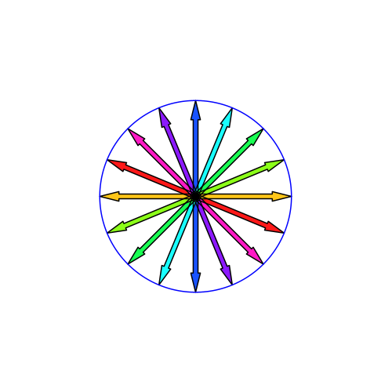
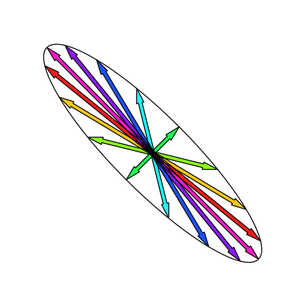
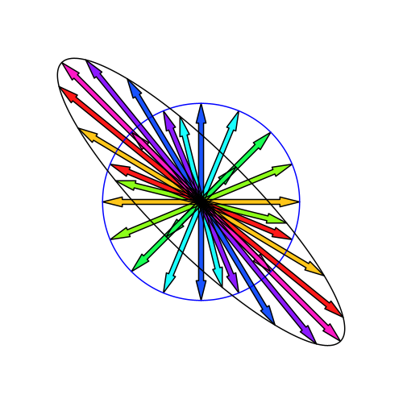
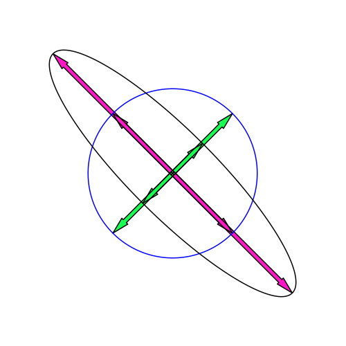

Lecture Notes MA21001
Linear Algebra –>
Vector spaces
Motivation
You have used vectors in previous modules to do elementary geometry. These vectors were introduced as lines connecting two points with a direction: \[{\vec a} = \overrightarrow{PQ},\] where \(P\) is the starting point of the vector and \(Q\) is the endpoint. The space of all these vectors is called the Euclidean space. It is usually introduced as a two- or three-dimensional space, but it is possible to generalise this to more dimensions. The Euclidean space was introduced as a simple model for the physical space around us. One can furthermore introduce orthogonal coordinates for the points in this space, e.g. \[P = (P_x,P_y,P_z) = (3,2,1).\] and this then allows us to define the components of a vector: \[{\vec a} = \overrightarrow{PQ} = \begin{pmatrix} Q_x- P_x \\ Q_y- P_y \\ Q_z -P_z \end{pmatrix} \] The identification between points and vectors in an Euclidean space becomes particularly simple if we can choose \(P\) to be the origin of the coordinate system, \(P=(0,0,0)\), \[{\vec a} = \overrightarrow{OQ} = \begin{pmatrix} Q_x \\ Q_y \\ Q_z \end{pmatrix} .\] Note that while the coordinates of points are usually denoted by a row of numbers (tuplet), the components of vectors are written as a column. An alternative way to write a vector is to write it as a sum of multiples of unit vectors, \[{\vec v} = v_x {\bf e}_x + v_y {\bf e}_y + v_z {\bf e}_z = \begin{pmatrix} v_x \\ v_y \\ v_z \end{pmatrix}.\] An addition as well as a scalar multiplication was defined for these vectors. Later, the scalar product between two vectors and the cross-product (vector product) were also defined.
The operations on vectors of this Euclidean space \(E\), the addition and scalar multiplication, had certain properties, for instance
- \(\vec{u} + \vec{v} \in E\), closure condition for addition
- \(\vec{u}+\vec{v} = \vec{v}+\vec{u}\), the addition is commutative
- \(\lambda (\vec{u}+ \vec{v}) = \lambda \vec{u} + \lambda \vec{v}\), distributive law
In the following, we will generalise this space and define an abstract notion of a vector space, which has a much wider range of applications. To understand the crucial properties of such a definition, consider two examples.
Example 2.1. The captain of a sailing boat can calculate the velocity of his ship (speed and direction over ground) as the sum of two velocities: the velocity of his boat relative to the water (speed through water) and the velocity of the water (drift due to tides or ocean currents). The sum of the two velocities is found in the same way as above, as the addition of two vectors; however, the coordinate system used is usually a polar one (the angle as determined by a compass and speed in knots) rather than a Cartesian one (x, y-components). The velocities obtained this way are part of a velocity space. The elements of this space, the velocities, follow the same rules of addition and scalar multiplication as the vectors in our Euclidean space. Remark: In this example, the velocity space is a tangent space to a manifold (the surface of the ocean), a concept explained in more detail in Differential Geometry.
Example 2.2. The set of all polynomials with degree \(\leq n\) is denoted by \(\mathcal{P}_{n}\). We can add polynomials in \(\mathcal{P}_{n}\) to obtain a polynomial in \(\mathcal{P}_{n}\) again. Polynomials \(p(x)= a_{0} + a_{1}x + ...+a_{n} x^{n}\) and \(q(x)= b_{0} + b_{1}x + ...+b_{n} x^{n}\)\(\in \mathcal{P}_{n}\) add up to \[p(x)+q(x) = (a_{0}+ b_{0}) + (a_{1} + b_{1}) x + ...+(a_{n}+ b_{n}) x^{n} \in \mathcal{P}_{n} .\] Similarly, we can multiply polynomials by a scalar \[\lambda p(x) = \lambda a_{0} + \lambda a_{1}x + ...+ \lambda a_{n} x^{n} \in \mathcal{P}_{n}\] Note that we can identify a polynomial of degree \(\leq n\) with the vector of coefficients \[p(x) \sim \scriptstyle \begin{pmatrix} a_{0} \\ a_{1} \\ \vdots \\ a_{n} \end{pmatrix} \textstyle.\]
The two examples above illustrate that numerous diverse examples exist where we find a structure similar to the Euclidean space. The elements in these spaces often don’t look like “vectors"; they can be polynomials, velocities, matrices, etc.~, but addition and scalar multiplication work in the same way, so they follow the same rules as vectors. This is the motivation to define an abstract notion of a vector space and define it based on how its elements behave under addition and scalar multiplication, rather than what they represent.
Definition of a Vector Space
Vector Space over R
A vector space over \(\mathbb{R}\) is a set \(V\), the elements of which are called vectors \(\vec{v} \in V\) along with two operations, an addition \(\vec{v} + \vec{w}\) and a scalar multiplication \(a \vec{v}\), \(a \in \mathbb{R}\), subject to the following axioms for all \(\vec{u},\vec{v}, \vec{w}\in V\) and \(a,b\in \mathbb{R}\) : \[\vec{u} + \vec{v} \in V \tag{1.1}\] \[a \vec{u} \in V \tag{1.2}\] \[\vec{u}+\vec{v} = \vec{v}+\vec{u} \tag{1.3}\] \[(\vec{u}+\vec{v})+\vec{w} = \vec{u}+(\vec{v}+\vec{w}) \tag{1.4}\] \[\mbox{there exists a vector } {\vec 0} \in V \mbox{such that } \vec{u}+\vec{0} = \vec{0}+\vec{u}=\vec{u} \tag{1.5}\] \[ \mbox{given } \vec{v} \mbox{ there exists a vector } -\vec{v} \in V \mbox{ such that }\vec{v}+ (-\vec{v}) = \vec{0} \tag{1.6}\] \[1 \vec{u} = \vec{u} \tag{1.7}\] \[a (\vec{u}+ \vec{v}) = a\vec{u} +a \vec{v} \tag{1.8}\] \[(a+b) \vec{u} = a\vec{u} +b \vec{u} \tag{1.9}\] \[a (b \vec{u}) =(a b) \vec{u} \tag{1.10}\]
Equation 1.1 and Equation 1.2 ensure that both operations do not lead to elements not in \(V\), Equation 1.3 to Equation 1.6 ensure that the addition is commutative and associative and that there is a neutral element \(\vec{0}\) and an inverse element with respect to the addition. Eq. Equation 1.7 states that the neutral element of the multiplication in \(\mathbb{R}\) is also the neutral element for the scalar multiplication, while the remaining conditions are distributive laws.
Alternative notations for vectors encountered in the literature are bold face symbols \({\bf v}\) or \(\bar v\) (not to be confused with complex conjugation) or \(\underline v\). The zero vector \(\vec{0}\) is often written just as \(0\). Note that there are two kinds of additions in this definition, both denoted by the same symbol \(+\). The addition of two real numbers (\(a+b\)) and the addition of two vectors \(\vec{v}+\vec{w}\). Also, for the multiplication, we have \(ab \in \mathbb{R}\) as well as \(a \vec{v} \in V\). No symbol is used for multiplication, since the dot as well as the cross will be later used to define two different types of multiplication between two vectors.
If we want to avoid writing a vector as a column, as this always takes up a lot of space, we can use the transpose (denoted by a superscript T): \[ (1,2)^T = \begin{pmatrix} 1 \\ 2 \end{pmatrix} \].
Example 2.3. The set \(\mathbb{R}^2 = \{(x_{1},x_{2})^T \vert x_{1} \in \mathbb{R}, x_{2} \in \mathbb{R}\}\) is a vector space, the elements of which are written as columns \(\vec{x}=\scriptstyle \begin{pmatrix} x_{1}\\x_{2} \end{pmatrix} \textstyle\), if addition and multiplication are defined as \[ \begin{pmatrix} x_1 \\ x_2 \end{pmatrix} + \begin{pmatrix} y_1 \\ y_2 \end{pmatrix} = \begin{pmatrix} x_1+y_1 \\ x_2+y_2 \end{pmatrix} ; \qquad a \begin{pmatrix} x_1 \\ x_2 \end{pmatrix} = \begin{pmatrix} a x_1 \\ a x_2 \end{pmatrix} \ .\] We have to check that all the axioms 1.1 to 1.10 are satisfied.
- axioms 1.1 and 1.2 are satisfied because the elements are again element in \(V\).
- axioms 1.3 to 1.4 are satisfied because the addition of real numbers in each entry of the vector is associative and commutative,
- 1.5 and 1.6 are correct if we use the following zero vector and negative element: \[\vec{0}=\scriptstyle \begin{pmatrix} 0\\0 \end{pmatrix} \textstyle \qquad -\vec{x} = \scriptstyle \begin{pmatrix} -x_{1}\\-x_{2} \end{pmatrix} \textstyle \ .\]
- axiom 1.7 is obvious from the definition of the scalar multiplication,
- axiom 1.8 \[(r+s) \begin{pmatrix} v_1 \\ v_2 \end{pmatrix} =\begin{pmatrix} (r+s)v_1 \\ (r+s)v_2 \end{pmatrix} = \begin{pmatrix} rv_1+sv_1 \\ rv_2+sv_2 \end{pmatrix} =r \begin{pmatrix} v_1 \\ v_2 \end{pmatrix} +s \begin{pmatrix} v_1 \\ v_2 \end{pmatrix}; \]
- axiom 1.9 \[r \left( \begin{pmatrix} v_1 \\ v_2 \end{pmatrix} + \begin{pmatrix} w_1 \\ w_2 \end{pmatrix} \right) =\begin{pmatrix} r(v_1+w_1) \\ r(v_2+w_2) \end{pmatrix} =\begin{pmatrix} rv_1+rw_1 \\ rv_2+rw_2 \end{pmatrix} =r \begin{pmatrix} v_1 \\ v_2 \end{pmatrix} +r \begin{pmatrix} w_1 \\ w_2 \end{pmatrix}; \]
- axiom 1.10 \[(rs) \begin{pmatrix} v_1 \\ v_2 \end{pmatrix} = \begin{pmatrix} (rs)v_1 \\ (rs)v_2 \end{pmatrix} =\begin{pmatrix} r(sv_1) \\ r(sv_2) \end{pmatrix} =r \left(s \begin{pmatrix} v_1 \\ v_2 \end{pmatrix} \right).\]
Example 2.4. The set \[V= \left\{ \left. \begin{pmatrix} v_{1}\\ v_{2} \end{pmatrix} \in \mathbb{R}^2 \right| v_1^2+v_2^2 \le 1\right\}\] with the addition and scalar multiplication as in the previous example is not a vector space. The first two axioms (closure conditions) are not satisfied. For example \[{\bf u}= \begin{pmatrix} 1/2\\ 1/2 \end{pmatrix} \in V, \ \mbox{since} \ \left(\frac{1}{2}\right)^2+\left(\frac{1}{2}\right)^2 = \frac{1}{2} \le 1, \ \mbox{but} \quad 2{\bf u}= 2 \begin{pmatrix} 1/2\\ 1/2 \end{pmatrix} = \begin{pmatrix} 1\\ 1 \end{pmatrix} \notin V.\]
Example 2.5. The set \[V= \left\{ \left. \begin{pmatrix} v_{1}\\ v_{2} \end{pmatrix} \right| v_1 \in \mathbb{R}, v_2 \in \mathbb{R}\right\}\] with the same scalar multiplication as before \[a \begin{pmatrix} x_1 \\ x_2 \end{pmatrix} = \begin{pmatrix} a x_1 \\ a x_2 \end{pmatrix} \ ,\] but the addition \[ \begin{pmatrix} x_1 \\ x_2 \end{pmatrix} + \begin{pmatrix} y_1 \\ y_2 \end{pmatrix} \ =\begin{pmatrix} x_1+y_1+1 \\ x_2+y_2+1 \end{pmatrix}\] is not a vector space. Axioms 8 and 9 are not satisfied.
Example 2.6. What we have shown for a vector space consisting of two vectors with two real components can be easily extended to n components. The vector space \[I\!\!R^{n} = \left\{ \left. \scriptscriptstyle \begin{pmatrix} v_{1}\\ v_{2} \\ \vdots \\ v_{n} \end{pmatrix} \textstyle \right| v_{i} \in \mathbb{R}, i=1,2, .. ,n \right\}\] together with the operation of addition \[\scriptscriptstyle \begin{pmatrix} v_{1}\\ v_{2} \\ \vdots \\ v_{n} \end{pmatrix} \textstyle + \scriptscriptstyle \begin{pmatrix} w_{1}\\ w_{2} \\ \vdots \\ w_{n} \end{pmatrix} \textstyle = \scriptscriptstyle \begin{pmatrix} v_{1}+w_{1}\\ v_{2} +w_{2}\\ \vdots \\ v_{n}+w_{n} \end{pmatrix} \textstyle\] and the scalar multiplication \[ \alpha \scriptscriptstyle \begin{pmatrix} v_{1}\\ v_{2} \\ \vdots \\ v_{n} \end{pmatrix} \textstyle = \scriptscriptstyle \begin{pmatrix} \alpha v_{1}\\ \alpha v_{2} \\ \vdots \\ \alpha v_{n} \end{pmatrix} \textstyle \quad \alpha \in \mathbb{R}\] is called the vector space \(\mathbb{R}^{n}\).
Although we haven’t defined yet what a basis is, we mention here for future reference that the vectors, \[\vec{e}_{1} = \scriptscriptstyle \begin{pmatrix} 1\\ 0 \\ \vdots \\ 0 \end{pmatrix} \textstyle, \quad \vec{e}_{2} = \scriptscriptstyle \begin{pmatrix} 0\\ 1 \\ 0 \\ \vdots \end{pmatrix} \textstyle, ... ,\vec{e}_{n} = \scriptscriptstyle \begin{pmatrix} 0\\ 0 \\ \vdots \\ 1 \end{pmatrix} \textstyle\] form a basis of \(\mathbb{R}^{n}\), the so called the standard basis. That is, every vector in \(\mathbb{R}^{n}\) can be expressed as a linear combination of the basis vectors, \[\vec{r} = r_{1} \vec{e}_{1} + r_{2} \vec{e}_{2} + ... + r_{n} \vec{e}_{n} ,\] Or, in other words, the vector space is spanned by the basis vectors.
Example 2.7. The set of all \(m\times n\) matrices where the entries are real numbers forms a vector space. We denote this space by \(M^{(m \times n)}\). Addition and scalar multiplication are the usual addition and scalar multiplication of matrices. A basis of the space consists of the matrices \({\rm E}^{(i,j)}\) which have a 1 at entry (i,j) and zeros everywhere else. The space is of dimension \(m n\).
Example 2.8. Let \(\mathcal{P}_{n}\) denote the set of all polynomials with degree \(\leq n\). \(\mathcal{P}_{n}\) is a vector space if we declare an addition and scalar multiplication of polynomials \(p(x)= a_{0} + a_{1}x + ...+a_{n} x^{n}\) and \(q(x)= b_{0} + b_{1}x + ...+b_{n} x^{n}\)\(\in \mathcal{P}_{n}\) by \[\begin{aligned} p(x)+q(x) &= (a_{0}+ b_{0}) + (a_{1} + b_{1}) x + ...+(a_{n}+ b_{n}) x^{n} \in \mathcal{P}_{n} , \\ \lambda p(x) &= \lambda a_{0} + \lambda a_{1}x + ...+ \lambda a_{n} x^{n} \in \mathcal{P}_{n} . \end{aligned}\] Note that we can identify a polynomial of degree \(\leq n\) with the vector of coefficients \[p(x) \sim (a_{0}, a_{1},.., a_{n})^{T} .\] Hence, a basis for the space consists of the monomials \(x^{r}, r=0,1, ..,n\) and is \(n+1\) dimensional.
Example 2.9. The solutions of a homogeneous linear differential equation of order \(n\), e.g. \[\frac{\mathrm{d}^{2}y}{\mathrm{d}x^{2}}-3\frac{\mathrm{d}y}{\mathrm{d}x} +2y=0.\qquad\] form a vector space. Addition and scalar multiplication in this vector space are the usual addition and scalar multiplication of functions. The space is spanned by \(n\) linearly independent solutions. This is an example of a so-called function space.
Example 2.10. The set \({\cal F}\) of all infinitely differentiable functions, \(\mathbb{R} \rightarrow \mathbb{R}\), i.e., those that have derivatives of all orders. Note that (among others) the following functions belong to \({\cal F}\): \[e^{nx},\,\cos \left( 2\pi nx\right) ,\,\,x^{n}\quad \,(\text{for all }n=0,1,2,...).\] \({\cal F}\) is an example of an infinite-dimensional space because it contains an unlimited number of linearly independent elements.
The definition of a vector space over \(\mathbb{R}\) can be extended to a vector space over a more general set of numbers, a field K. To understand what a ‘field’ is, we need to take a short detour into number systems.
Vector Space over K
A vector space over a field \(K\) is a set \(V\), the elements of which are called vectors \(\vec{v} \in V\) along with two operations, an addition \(\vec{v} + \vec{w}\) and a scalar multiplication \(a \vec{v}\), \(a \in K\), subject to the same 10 axioms Equation 1.1 to Equation 1.10 as before only that now \(a,b\in K\).
Example 2.11. The set \(\ref{vksoverk}\) \(\mathbb{C}^{n} =\{ (c_{1},...,c_{n})^{T}| c_{1},..,c_{n}\in \mathbb{C}\}\) is a vector space over \(\mathbb{C}\). Addition and scalar multiplication are the usual addition and scalar multiplication of complex numbers. A basis for this space is given by the n vectors \(e_{1}=(1,0,...,0)\),..., \(e_{n}=(0,...,0,1)\). The space has \(n\) dimensions. Note that we can identify \(\mathbb{C}\) with \(\mathbb{R}^{2}\) due to \(z= a + b i\) with \(a,b \in \mathbb{R}\). Hence \(\mathbb{C}^{n} \sim \mathbb{R}^{2n}\) is also a vector space over \(\mathbb{R}\), but in this case it is 2n-dimensional with two basis vectors for the real and imaginary part of each complex dimension.
Linear independence
In the same way as a coordinate system is introduced on a plane to allocate a unique pair of coordinates to any point in the plane, we would like to have a coordinate system for a vector space, which uniquely assigns to any vector of this space a coordinate tuple (set). To generate such a coordinate system, we need a set of ‘basis’ vectors which are, in a sense, independent. Consider the following example in the x-y plane.
Given the two unit vectors in \(\mathbb{R}^2\), \[\vec{e}_1 = \scriptstyle \begin{pmatrix} 1 \\ 0 \end{pmatrix} \textstyle, \ \vec{e}_2= \scriptstyle \begin{pmatrix} 0 \\ 1 \end{pmatrix} \textstyle\] Any point in the plane, that is, any vector in \(\mathbb{R}^2\), can be represented by a linear combination \[\vec{v } = v_1 \vec{e}_1 + v_2 \vec{e}_2, v_1,v_2 \in \mathbb{R}\] where \((v_1,v_2)\) play the role of coordinates. These coordinates are unique; that is, there are no two different vectors with the same coordinate pair, nor are two different coordinate pairs assigned to the same vector.
The same is true if we replace our basis vectors by (check!) \[\vec{e}_1 = \scriptstyle \begin{pmatrix} 1 \\ 0 \end{pmatrix} \textstyle, \ \vec{e}_2= \scriptstyle \begin{pmatrix} 1 \\ 1 \end{pmatrix} \textstyle .\]
However, if we use a triplet of vectors: \[\vec{e}_1 = \scriptstyle \begin{pmatrix} 1 \\ 0 \end{pmatrix} \textstyle, \ \vec{e}_2= \scriptstyle \begin{pmatrix} 0 \\ 1 \end{pmatrix} \textstyle, \ \vec{e}_3= \scriptstyle \begin{pmatrix} 1 \\ 1 \end{pmatrix} \textstyle ,\] \[\vec{v } = v_1 \vec{e}_1 + v_2 \vec{e}_2 + v_3 \vec{e}_3 , v_1,v_2,v_3 \in \mathbb{R}\]
Then there are vectors with non-unique coordinates: \[\vec{v} = 2 \vec{e}_1 + 3 \vec{e}_2 -1 \vec{e}_3 = 1 \vec{e}_1 + 2 \vec{e}_2 + 0 \vec{e}_3\]
More generally, if such a non-unique case occurs, one can write \[\begin{aligned} {\bf v} & = v_1 \vec{e}_1 + v_2 \vec{e}_2 + v_3 \vec{e}_3 \\ {\bf v} & = v_1' \vec{e}_1 + v_2' \vec{e}_2 + v_3' \vec{e}_3 \\ \Rightarrow \vec{0} & = (v_1-v_1') \vec{e}_1 + (v_2-v_2') \vec{e}_2 + (v_3-v_3') \vec{e}_3, \\ \Rightarrow \vec{0} & = a_1 \vec{e}_1 + a_2 \vec{e}_2 + a_3 \vec{e}_3, \quad (a_1,a_2,a_3) \neq (0,0,0) \end{aligned}\] where at least one of the three brackets is non-zero since we assumed that \((v_1,v_2,v_3) \neq (v_1',v_2',v_3')\). This is called a non-trivial linear combination.
Linear Combination
An expression of the form \(a_{1}{\vec v} _{1}+a_{2}{\vec v}_{2}+\cdots +a_{n}{\vec v}_{n}\) is known as a linear combination of the \(n\) vectors \({\vec v} _{1},{\vec v}_{2},\cdots ,{\vec v}_{n}\). The numbers \(a_{1}, a_{2},..., a_{n}\) are known as the coefficients of the linear combination.
Linear Independence
A set of vectors \(\vec{v_{1}}, \vec{v_{2}},..., \vec{v_{n}}\) is called linearly independent if none of its elements is a linear combination of the others. That is the equation \[a_{1}\vec{v_{1}} + a_{2} \vec{v_{2}}+ ... + a_{n}\vec{v_{n}} = 0\] has no solution (\(a_{1},a_{2},..,a_{n})\) other than the trivial solution \((0,0,...,0)\). Otherwise, the set is called linearly dependent.
I.e., a set of vectors is linearly dependent if we can find a non-trivial linear combination that yields the zero vector. Note that a simple relation between just two of the vectors, e.g. \(\mathbf{v}_{1}=3\mathbf{v}_{2},\) is enough to make the complete set \(\mathit{ \{}\mathbf{v}_{1},\mathbf{v}_{2},...,\mathbf{v}_{n}\mathit{\}}\) linearly dependent.
Example 2.12. Are the vectors \((1,-1,0)^{T},(2,1,1)^{T}\) and \((-1,2,1)^{T}\) linearly independent?
We solve \[a_{1} \begin{pmatrix} 1 \\ -1 \\ 0 \end{pmatrix} +a_{2} \begin{pmatrix} 2 \\ 1 \\ 1 \end{pmatrix} +a_{3} \begin{pmatrix} -1 \\ 2 \\ 1 \end{pmatrix} = \begin{pmatrix} 0 \\ 0 \\ 0 \end{pmatrix}.\] for \((a_{1}, a_{2}, a_{3})\). We find that \(a_{1}=a_{2}=a_{3}=0\); so the 3 given vectors are linearly independent. If we replace the first entry in the first vector by 3, the set becomes linearly dependent. A solution is \(a_1=1\), \(a_2=-1\), \(a_3=1\).
Example 2.13. Are the vectors \((1,0,0)^{T}\), \((1,1,0)^{T}\) and \((1,0,1)^{T}\) linearly independent?
We solve \[a_{1} \scriptstyle \begin{pmatrix} 1 \\ 0 \\ 0 \end{pmatrix} \textstyle + a_{2} \scriptstyle \begin{pmatrix} 1 \\ 1 \\ 0 \end{pmatrix} \textstyle + a_{3} \scriptstyle \begin{pmatrix} 1 \\ 0 \\ 1 \end{pmatrix} \textstyle = \scriptstyle \begin{pmatrix} 0\\0\\0 \end{pmatrix} \textstyle,\] for \((a_{1},a_{2},a_{3})\). The third component of this equation implies \(a_{3}=0\). From the second and first component follow \(a_{2}=0\) and \(a_{1} =0\). Hence, the vectors are linearly independent.
On the other hand, the vectors \[\scriptstyle \begin{pmatrix} 1 \\ 0 \\ 0 \end{pmatrix} \textstyle, \quad \scriptstyle \begin{pmatrix} 1 \\ 1 \\ 0 \end{pmatrix} \textstyle, \quad \scriptstyle \begin{pmatrix} 0 \\ 1 \\ 0 \end{pmatrix} \textstyle,\] are linearly dependent, since the third component reads \(a_{3} 0 = 0\) which is satisfied for any \(a_{3}=\lambda\). The second component requires \(a_{2} = - a_{3}\) and the first \(a_{1} = a_{3}\). So there are non-trivial solutions \((\lambda , -\lambda , \lambda )\), e.g. \((1,-1,1)\).
Example 2.14. A set of two vectors is linearly independent if they are not parallel: \(a_{1} \vec{v}_{1} \neq a_{2} \vec{v_{2}}\) for \(a_{1}, a_{2}\) non-zero. A set of three vectors in \(\mathbb{R}^{2}\) is always linearly dependent. A set of three vectors in \(\mathbb{R}^{3}\) is linearly independent if they do not all lie in the same plane.
Example 2.15. Show that the vectors \((1,0,2,1)^{T},(0,1,-1,2)^{T},(2,1,3,4)^{T}\) are linearly dependent in \(\mathbb{R}^{4}.\)
Span
The set of vectors \(\{{\vec v}_{1},{\vec v}_{2},...,{\vec v}_{n}\}\) in \(V\) span \(V\) if every vector \(\vec{v}\in V\) is a linear combination of \(\{{\vec v}_{1},{\vec v}_{2},...,{\vec v}_{n}\}\). The set of all vectors of the form \({\vec v=}a_{1}{\vec v}_{1}+a_{2}{\vec v}_{2}+\cdots +a_{n}{\vec v}_{n}\) is called the span of \(\{{\vec v}_{1},{\vec v}_{2},...,{\vec v}_{n}\}\) , and denoted by span(\({\vec v}_{1},{\vec v}_{2},...,{\vec v}_{n}\)).
Example 2.16. \[\begin{aligned} {\rm span}\left(\scriptscriptstyle \begin{pmatrix} 1\\0 \end{pmatrix} \textstyle,\scriptscriptstyle \begin{pmatrix} 2\\0 \end{pmatrix} \textstyle\right) & = \left\{ \left. {\bf v} =a_1 \scriptscriptstyle \begin{pmatrix} 1\\0 \end{pmatrix} \textstyle + a_2 \scriptscriptstyle \begin{pmatrix} 2\\0 \end{pmatrix} \textstyle\right| a_1,a_2 \in \mathbb{R} \right\} \\ &= \left\{ \left.{\bf v} = \scriptscriptstyle \begin{pmatrix} a_1+2a_2 \\ 0 \end{pmatrix} \textstyle \right| a_1,a_2 \in \mathbb{R} \right\} = \mathbb{R}^{1}, \end{aligned}\] spans the whole of \(\mathbb{R}\). This space contains only the vectors with 0 in the second component.
Example 2.17. The span of two linearly independent vectors in \(\mathbb{R}^{3}\) is a plane. The span of three linearly independent vectors in \(\mathbb{R}^{3}\) is the whole of \(\mathbb{R}^{3}\).
Example 2.18. The set \(\{(1,0)^{T},(0,1)^{T}\}\) spans \(\mathbb{R}^{2}\). \[\begin{aligned} {\rm span}\left(\scriptscriptstyle \begin{pmatrix} 1\\0 \end{pmatrix} \textstyle,\scriptscriptstyle \begin{pmatrix} 0\\1 \end{pmatrix} \textstyle\right) & = \left\{ \left. \vec{v} = a_1 \scriptscriptstyle \begin{pmatrix} 1\\0 \end{pmatrix} \textstyle + a_2 \scriptscriptstyle \begin{pmatrix} 0\\1 \end{pmatrix} \textstyle\right| a_1,a_2 \in \mathbb{R} \right\} \\ & = \left\{ \left. \vec{v} = \scriptscriptstyle \begin{pmatrix} a_1\\a_2 \end{pmatrix} \textstyle \right| a_1,a_2 \in \mathbb{R} \right\} = \mathbb{R}^{2}. \end{aligned}\] Thus, any vector \((a_{1},a_{2})^{T}\in\mathbb{R}^{2}\) can be expressed as a linear combination of \((1,0)^{T}\) and \((0,1)^{T}\).
If we add another vector, e.g. \[{\rm span}\left(\scriptscriptstyle \begin{pmatrix} 1\\0 \end{pmatrix} \textstyle,\scriptscriptstyle \begin{pmatrix} 0\\1 \end{pmatrix} \textstyle, \scriptscriptstyle \begin{pmatrix} 1\\1 \end{pmatrix} \textstyle \right) =\mathbb{R}^{2},\] then the space may or may not become any bigger. In this case, the space remains the same since the third vector is a linear combination of the first two vectors, that is, the set is linearly dependent. The smallest linearly independent set which spans a given vector space is called a basis.
Basis
A basis of a vector space is a linearly independent set of vectors which span the vector space.
Example 2.19. The set of vectors \(\left\{(1,0,0)^{T}, (0,1,0)^{T}, (0,0,1)^{T}\right\}\) forms a basis of \(\mathbb{R}^{3}\) (more generally \(K^{3}\) for a field \(K\)), the set of vectors \(\left\{(1,0,0,0)^{T}, (0,1,0,0)^{T},\right\}\)
\(\left (0,0,1,0)^{T},(0,0,0,1)^{T}\right\}\) forms a basis of \(\mathbb{R}^{4}\) (more generally \(K^{4}\)) and so on. This is called the standard basis of \(\mathbb{R}^{n}\) (\(K^{n}\) in more general sense) for \(n\in\mathbb{N}\).
Example 2.20. The vectors \[\vec{f}_{1} = \scriptscriptstyle \begin{pmatrix} 0\\ 1 \\ 1 \end{pmatrix} \textstyle, \quad \vec{f}_{2} = \scriptscriptstyle \begin{pmatrix} 0\\ 1 \\ 0 \end{pmatrix} \textstyle, \quad \vec{f}_{3} = \scriptscriptstyle \begin{pmatrix} 0\\ 0 \\ 1 \end{pmatrix} \textstyle,\] do not form a basis for \(\mathbb{R}^{3}\) since they do not span the whole \(\mathbb{R}^{3}\). The vector \(\vec{e}_{1}\), for instance, has no representation in this set.
Example 2.21. The vectors \[\vec{f}_{1} = \scriptscriptstyle \begin{pmatrix} 1\\ 0 \\ 0 \end{pmatrix} \textstyle, \quad \vec{f}_{2} = \scriptscriptstyle \begin{pmatrix} 0\\ 1 \\ 0 \end{pmatrix} \textstyle, \quad \vec{f}_{3} = \scriptscriptstyle \begin{pmatrix} 0\\ 0 \\ 1 \end{pmatrix} \textstyle, \quad \vec{f}_{4} = \scriptscriptstyle \begin{pmatrix} 1\\ 1 \\ 1 \end{pmatrix} \textstyle ,\] are also not a basis. Although they span the whole \(\mathbb{R}^{3}\), they are not linearly independent.
Example 2.22. Consider the set of all \(n\times n\) matrices with real entries \(\mathbb{R}^{(n\times n)}\). Let \(E_{ij}\) be the \(n\times n\) matrix with a ‘1’ in position \((i,j)\) and ‘0’ elsewhere. Then the collection of all such matrices (for all \(i,j=1,2,\ldots,n\)) is a basis for \(\mathbb{R}^{(n\times n)}\).
Consider the case \(n=2\), then the basis matrices are \[\left(\begin{array}{cc} a & b\\ c & d \end{array}\right)=aE_{11}+bE_{12}+cE_{21}+dE_{22},\quad\textrm{(spanning)}.\] Also, we can show that the four \(E\) matrices are linearly independent. \[\alpha _{1}E_{11}+\alpha _{2}E_{12}+\alpha _{3}E_{21}+\alpha _{4}E_{22}=\mathbf{0}\] means that \[\left(\begin{array}{cc} \alpha _{1} & \alpha _{2}\\ \alpha _{3} & \alpha _{4} \end{array}\right) = \left(\begin{array}{cc} 0 & 0\\ 0 & 0 \end{array}\right),\quad\textrm{i.e. }\alpha _{1}=\alpha _{2}=\alpha _{3}=\alpha _{4}=0.\] Since the four matrices span the space and are linearly independent, they form a basis for \(\mathbb{R}^{(n\times n)}\).
Uniqueness w.r.t. a basis
Let \(\left\{ {\vec v}_{1},{\vec v}_{2},\dots ,{\vec v} _{n}\right\}\) be a basis for a vector space \(V.\) Each vector from \(V\) can be uniquely expressed as a linear combination of these vectors.
If there were two different representations of a vector \({\vec v}\) with respect to this basis: Eg. \({\vec v} =a_{1}{\vec v}_{1} + \dots + a_{n }{\vec v}_{n}\) and \({\vec v} =b_{1} {\vec v}_{1} + \dots + b_{n }{\vec v}_{n}\), then the difference \({\bf 0} =(a_{1} - b_{1}){\vec v}_{1} + \dots + (a_{n }-b_{n}){\vec v}_{n}\) would be a non-trivial linear combination representing the zero vector, which is impossible since the vectors \({\vec v}_{1},\dots ,{\vec v}_{n}\) were linearly independent. ◻
Example 2.23. In \(\mathbb{R}^{3},\) \[\begin{pmatrix} 2 \\ -3 \\ 4 \end{pmatrix} =2 \begin{pmatrix} 1 \\ 0 \\ 0 \end{pmatrix} -3 \begin{pmatrix} 0 \\ 1 \\ 0 \end{pmatrix} +4 \begin{pmatrix} 0 \\ 0 \\ 1 \end{pmatrix} =2{\vec e}_{1}-3{\vec e}_{2}+4{\vec e}_{3}.\]
So, any linear combination of the vectors \({\vec e}_{1}, {\vec e}_{2},{\vec e}_{3}\) is a vector in \(\mathbb{R}^{3}\) and any vector in \(\mathbb{R}^{3}\) can be written as a linear combination of \({\vec e}_{1},{\vec e} _{2},{\vec e}_{3}\) and the expression is unique.
Example 2.24 (Basis). A different basis, other than the standard basis, for the \(\mathbb{R}^{3}\) is, for instance \[\vec{f}_{1} = \scriptscriptstyle \begin{pmatrix} 1\\ 1 \\ 0 \end{pmatrix} \textstyle, \quad \vec{f}_{2} = \scriptscriptstyle \begin{pmatrix} 0\\ 1 \\ 0 \end{pmatrix} \textstyle, \quad \vec{f}_{3} = \scriptscriptstyle \begin{pmatrix} 0\\ 0 \\ 1 \end{pmatrix} \textstyle,\] We can check that we still can express any vector with respect to (w.r.t.) this basis. We express the arbitrary vector \(\vec{r}\) first w.r.t. the standard basis and show that we can translate this into a representation w.r.t. the new basis: \[\begin{aligned} \vec{r} & = r_{1} \vec{e}_{1} + r_{2} \vec{e}_{2} +r_{3} \vec{e}_{3} \\ & = r_{1} (\vec{e}_{1} + \vec{e}_{2}) + (r_{2}-r_{1}) \vec{e}_{2} +r_{3} \vec{e}_{3} \\ & = r_{1} \vec{f}_{1} + (r_{2}-r_{1}) \vec{f}_{2} +r_{3} \vec{f}_{3} . \end{aligned}\] And this expression is unique. In addition, the definition of a basis requires that the new basis vectors are linearly independent, which they are; otherwise, they could not span the whole three-dimensional space.
We note that there are different bases, but they all have the same number of elements.
Number of elements of a basis
Every basis of a vector space contains the same number of vectors, this number being the largest set of linearly independent vectors in the set.
Suppose that a vector space \(V\) has two bases, one of which is \(\left\{ {\vec w}_{1},...,{\vec w}_{p}\right\}\) that contains \(p\) vectors and the other \(\left\{ {\vec z}_{1},...,{\vec z}_{q}\right\}\) that contains \(q\) vectors. We can assume that \(p>q.\) We shall show that the vectors \(\left\{ {\vec w}_{1},...,{\vec w}_{p}\right\}\) are linearly dependent, contradicting the fact that they form a basis.
To begin, since \(V={\rm span}\left( {\vec z}_{1},...,{\vec z}_{q}\right)\) and each of the \({\vec w}\)’s lies in \(V,\) they must be linear combinations of the \({\vec z}\)’s. i.e., \[\begin{aligned} {\vec w}_{1} &=c_{11}{\vec z}_{1}+c_{21}{\vec z}_{2}+\cdots +c_{q1} {\vec z}_{q} \\ &\vdots \\ {\vec w}_{p} &=c_{1p}{\vec z}_{1}+c_{2p}{\vec z}_{2}+\cdots +c_{qp} {\vec z}_{q}. \end{aligned}\] Now consider a linear combination of the \({\vec w}\)’s: \[\begin{aligned} \sum_{j=1}^{p}a_{j}{\vec w}_{j} = & a_{1}{\vec w}_{1}+\cdots +a_{p} {\vec w}_{p} \\ = & a_{1}\left( c_{11}{\vec z}_{1}+c_{21}{\vec z}_{2}+\cdots +c_{q1} {\vec z}_{q}\right) \\ &+ a_{2} \left( c_{12}{\vec z}_{1}+c_{22}{\vec z}_{2}+\cdots +c_{q2} {\vec z}_{q}\right) \\ & \vdots \\ & + a_{p}\left( c_{1p}{\vec z}_{1}+c_{2p}{\vec z}_{2}+\cdots +c_{qp} {\vec z}_{q}\right) \\ = & \left( c_{11}a_{1}+\cdots +c_{1p}a_{p}\right) {\vec z}_{1}+\cdots +\left( c_{q1}a_{1}+\cdots +c_{qp}a_{p}\right) {\vec z}_{q}. \end{aligned}\] Can we choose the \(a\)’s so that the right-hand side is zero? Since the \({\vec z}\)’s are l.i., this will require that each of the coefficients be zero: \[\begin{aligned} c_{11}a_{1}+\cdots +c_{1p}a_{p} &=0 \\ &\vdots \\ c_{q1}a_{1}+\cdots +c_{qp}a_{p} &=0 \end{aligned}\] but this is a system of \(q\) equations in \(p\) unknowns with \(p>q.\) Such a system always has non-zero solutions. Hence, there will be a choice if the coefficients \(a_{1},\ldots ,a_{p}\) (not all of which are zero) so that \(a_{1} {\vec w}_{1}+\cdots +a_{p}{\vec w}_{p}=0.\) But this means that the \({\vec w}\)’s are l.d.. We have a contradiction, since we assumed the \({\vec w}\)’s form a basis. A similar argument can be applied if we assume that \(q>p.\) Thus, a contradiction can be avoided only when \(p=q.\) ◻
Dimension
The number of elements of a basis is called the dimension of the space.
Example 2.25. \(\mathbb{R}^{n}\) has dimension \(n\).
Example 2.26. The space of polynomials of degree \(\leq n\) has basis \(\{1, x, x^{2},\ldots,x^{n}\}\), so its dimension is \(n+1\) (not \(n\)).
Note that the dimension of \(V\) depends on the field \(K\). Thus the complex numbers \(\mathbb{C}\) can be considered as a space of dimension \(1\) over \(\mathbb{C}\), or as a space of dimension \(2\) over \(\mathbb{R}\), where \(\{1, i\}\) is a basis for \(\mathbb{C}\) over \(\mathbb{R}\).
Smaller spanning set
Any linearly dependent vectors of a spanning set can be omitted without making the span smaller. \[{\rm span}({\vec v}_{1},{\vec v}_{2},...,{\vec v}_{n}) = {\rm span}( \mbox{largest l.i. subset of } {\vec v}_{1},{\vec v}_{2},...,{\vec v}_{n})\]
Without loss of generality (w.l.o.g.) we can assume that \(\{{\vec v}_{1},{\vec v}_{2},...,{\vec v}_{r} \}\) is the largest linearly independent subset (\(r\le n\)). Then any remaining vectors \({\vec v}_{r+1}, ... , {\vec v}_{n}\) can be expressed as a linear combination of \(\{{\vec v}_{1},{\vec v}_{2},...,{\vec v}_{r} \}\) hence \({\rm span}({\vec v}_{1},{\vec v}_{2},...,{\vec v}_{r}) = {\rm span}({\vec v}_{1},{\vec v}_{2},...,{\vec v}_{n})\) ◻
Every set of m+1 vectors in \(\mathbb{R}^{m}\) is linearly dependent.
We know that the standard basis of \(\mathbb{R}^{m}\) consists of m elements, hence the dimension is m. Suppose there were \(m+1\) linearly independent vectors in \(\mathbb{R}^{m}\), then they could be used to form a basis. But then the dimension of \(\mathbb{R}^{m}\) would be \(m+1\), in contradiction to the previous result that the dimension is a unique number. ◻
Subspaces
Suppose that \(W\) is a nonempty subset of the vector space \(V\), which also satisfies all the vector space axioms itself, then \(W\) is called a subspace of \(V\). It is important to realise that for \(W\) to be subspace of \(V\), then \(W\) must satisfy the following conditions:
Subspace
A subset \(W \subseteq V\) of vectors in a vector space \(V\) is called a subspace of \(V\) if the following conditions hold:
(i) \({\vec 0}\in W,\)
(ii) if \({\vec u} \in W\) and \({\vec v} \in W\) then \({\vec u}+{\vec v\in }W\) ;
(iii) if \({\vec u\in }W\) then \(a{\vec u\in }W\) for all \(a\in K\).
All other axioms are automatically satisfied because each element in \(W\) is already in \(V\).
Example 2.27. For any vector space \(V\), \(V\) is always a subspace of itself.
Example 2.28. We also always have a subspace \(\{\vec{0}\}\) consisting of the zero vector alone. This is called the trivial subspace, and its dimension is \(0\), because it has no linearly independent sets of vectors at all.
Example 2.29. The subspaces of \(\mathbb{R}^{2}\) are \(\{\vec{0}\}\), lines through the origin, and \(\mathbb{R}^{2}\) itself.
Example 2.30. The subspaces of \(\mathbb{R}^{3}\) are \(\{\vec{0}\}\), lines through the origin, planes through the origin, and \(\mathbb{R}^{3}\) itself.
Example 2.31. Let \(W=\{(x,y,z)^{T}:y=2x, z=0,x,y,z\in\mathbb{R}\}\). This is the set of points lying on the line \(y=2x\) in the plane \(z=0\). \(W\) is a subspace of \(\mathbb{R}^{3}\).
Example 2.32. The set \(W=\{(x,y,z,w)^{T}:x+y+z=1\}\) is not a subspace of \(\mathbb{R}^{4}\). The simplest way to see this is that \({\vec 0\not\in }W\). Another way is to choose suitable vectors \(\vec{u},\vec{v}\in W\) then show that \(\vec{u}+\vec{v}\not\in W\). A third way is to choose a suitable \({\vec u} \in W\) then show that \(a{\vec u\not\in }W\) for any \(a\neq 1\). Any one of the reasons suffices.
Example 2.33. Consider the subset \(S\) of \(P_{2}\) defined so as to contain all polynomial \({\rm p}\left( x\right) =a+bx+cx^{2}\) for which \(a+b-2c=0\). Show that \(S\) is a subspace of \(P_{2}\) and obtain a basis for \(S\).
Intersection of subspaces
If \(W_{1}\) and \(W_{2}\) are subspaces of \(V\) then so is \(W_{1}\cap W_{2}\).
Let \(\vec{u},\vec{v}\in W_{1}\cap W_{2}\) and \(a\in K\). Then \(\vec{u}+\vec{v}\in W_{1}\) (because \(W_{1}\) is a subspace) and \(\vec{u}+\vec{v}\in W_{2}\) (because \(W_{2}\) is a subspace). Hence \(\vec{u}+\vec{v}\in W_{1}\cap W_{2}\). Similarly, we get \(a\vec{v}\in W_{1}\cap W_{2}\) so \(W_{1}\cap W_{2}\) is a subspace of \(V\). ◻
Example 2.34. Let \(V= \mathbb{R}^{2\times 2}\) and define \(W_{1}\) to be the subspace of matrices of the form \[\left[ \begin{array}{cc} a & 0 \\ b & c \end{array} \right]\] (\(a,b,c\) real) while \(W_{2}\) is the subspace of matrices of the form \(\left[ \begin{array}{cc} a & a \\ b & b \end{array} \right]\). Then \(W_{1}\cap W_{2}\) consists of all matrices of the form \(\left[ \begin{array}{cc} 0 & 0 \\ b & b \end{array} \right]\) , which is a subspace of \(V\).
While \(W_{1}\cap W_{2}\) is a subpace, \(W_{1}\cup W_{2}\) is in general not a subspace. For exampe if \(W_1\) and \(W_2\) are the x- and y-axis of \(\mathbb{R}^2\), the union is not a subspace.
Example 2.35. Let \(V=\mathbb{R}^{2}\), let \(W=\{(a,0)^{T}:a\in\mathbb{R}\}\) and \(W_{2}=\{(0,b)^{T}:b\in\mathbb{R}\}\). Then \(W_{1}\), \(W_{2}\) are subspaces of \(V\), but \(W_{1}\cup W_{2}\) is not a subspace, because \((1,0)^{T}\in W_{1}\cup W_{2}\) and \((0,1)^{T}\in W_{1}\cup W_{2}\), but \((1,0)^{T}+(0,1)^{T}=(1,1)^{T}\notin W_{1}\cup W_{2}\).
Example 2.36. The set \(W=\{(x,y,z)^{T}:x^{2}+y^{2}=z\}\) is not a subspace of \(\mathbb{R}^{3}\).
The vectors \({\vec u=}\left( 0,1,1\right) ^{T}\) and \({\vec v}=\left( 1,2,5\right) ^{T}\) are both in \(W\) but \({\vec u}+{\vec v}\) is not.
The three conditions in the definition of a subspace state that every linear combination of vectors of the subspace has to be an element of the subspace. This proves the following theorem:
Span is a subspace
\({\rm span}({\vec v}_{1},{\vec v}_{2},...,{\vec v}_{n})\) is a subspace of \(V\) for \({\vec v}_{1},{\vec v}_{2},...,{\vec v}_{n} \in V\).
\(W={\rm span}({\vec v}_{1},{\vec v}_{2},...,{\vec v}_{n})\) is by definition a subset of \(V\). The \(\vec{0}\) is in \(W\), which is property (i) in the definition of a subspace, and (ii) and (iii) are also satisfied due to the span including all linear combinations. ◻
Example 2.37. The set \(W=\{(x,y,z,w)^{T}:x+y+z=w\}\) is a subspace of \(\mathbb{R}^{4}\). We can show this in two ways: (a) by using the definition of a subspace (\(\ref{subspace}\)) or (b) by finding a spanning set and using the above theorem. Method (a) requires checking the three conditions for a subspace:
\({\bf 0} = (0,0,0,0)^{T} \in W\) for \(x=y=z=0\).
With \({\bf u} = (x,y,z,x+y+z)^{T} \in W\) and \({\bf v} = (x',y',z',x'+y'+z')^{T} \in W\) also \({\bf u} + {\bf v}= (x+x',y+y',z+z',(x+x')+(y+y')+(z+z'))^{T} \in W\)
With \({\bf u} = (x,y,z,x+y+z)^{T} \in W\) and \(\lambda {\bf u} = (\lambda x,\lambda y,\lambda z, \lambda (x+y+z))^{T} \in W\)
For method (b), we have to find vectors which span \(W\). Note that the set \(W\) has three free parameters, which can be used to represent an arbitrary element of \(W\): \[\scriptscriptstyle \begin{pmatrix} x\\y\\z\\x+y+z \end{pmatrix} \textstyle = x \scriptscriptstyle \begin{pmatrix} 1\\0\\0\\1 \end{pmatrix} \textstyle +y \scriptscriptstyle \begin{pmatrix} 0\\1\\0\\1 \end{pmatrix} \textstyle + z \scriptscriptstyle \begin{pmatrix} 0\\0\\1\\1 \end{pmatrix} \textstyle\] Hence \(W = {\rm span}((1,0,0,1)^{T}, (0,1,0,1)^{T}, (0,0,1,1)^{T})\). This second approach has the advantage that the spanning set can also be used to find a basis for the subspace. Indeed, the three vectors are also linearly independent (prove!), and we obtain the basis \({\vec v}_{1}=(1,0,0,1)^{T},{\vec v}_{2}=(0,1,0,1)^{T},{\vec v} _{3}=(0,0,1,1)^{T}\).
Range and Nullspace of a Matrix
Consider a system of linear equations, \(A\mathbf{x} = \mathbf{y}\) where \(A\) is an \(m \times n\) matrix. We can consider the matrix \(A\) as a mapping from the space of all \(\mathbf{x}\) vectors in \(\mathbb{R}^{n}\) onto the space of all possible \(\mathbf{y}\) vectors, which is a subset of \(\mathbb{R}^{m}\). \[A: \mathbf{x} \in \mathbb{R}^{n} \longrightarrow \mathbf{y} = A \mathbf{x} \in \mathbb{R}^{m}\].
Range
Let \(A\) be an \(m \times n\) matrix. The image of \(\mathbb{R}^{n}\) under \(A\) is a subspace of \(\mathbb{R}^{m}\) called the range (or column space) of \(A\), denoted by \({\rm range}(A)\), and \[ {\rm range}(A) = {\rm span}({\rm columns \, of } A)\]
With this result, the question to ask whether a system of linear equations \(A\mathbf{x} = \mathbf{b}\) has a solution translates to the question whether \(\mathbf{b} \in {\rm range}(A)\).
Example 2.40. Let \[A = \left[\begin{array}{ccc} 1 & 0 & 1 \\ 1 & 1 & 3 \\ 0 & 1 & 2 \end{array}\right]\]
Check whether the system \(A\mathbf{x} = \mathbf{b}\) consistent when
- \(\mathbf{b} = \left[1,1,1\right]^T\),
- \(\mathbf{b} = \left[1,2,1\right]^T\).
Under what general conditions on \(\mathbf{b} = \left[\mathbf{b_1},\mathbf{b_2},\mathbf{b_3}\right]^T\) is the system consistent?
We reduce \(A\) to a row echelon form: \[\left[\begin{array}{ccc} 1 & 0 & 1 \\ 1 & 1 & 3 \\ 0 & 1 & 2 \end{array}\right] \xrightarrow{R_2 - R_1} \left[\begin{array}{ccc} 1 & 0 & 1 \\ 0 & 1 & 2 \\ 0 & 1 & 2 \end{array}\right] \xrightarrow{R_3 - R_2} \left[\begin{array}{ccc} 1 & 0 & 1 \\ 0 & 1 & 2 \\ 0 & 0 & 0 \end{array}\right]\]
Hence, for example, the first two columns span \({\rm range}(A)\) and hence \(\mathbf{b} = \lambda \left[1,1,0\right]^T + \mu \left[0,1,1\right]^T\) \(= \left[\mathbf{b_1}, \mathbf{b_1} + \mathbf{b_3}, \mathbf{b_3}\right]^T\) is necessary for the system to be consistent. This is satisfied for \(\mathbf{b} = \left[1,2,1\right]^T\), but not for \(\mathbf{b} = \left[1,1,1\right]^T\). Note that the first and the third columns of \(A\) also span \({\rm range}(A)\). Even the last two columns can be used.
Nullspace
Let \(A\) be an \(m \times n\) matrix. The nullspace of \(A\), is the set of vectors \({\bf x}\) such that \(A\mathbf{x} = \mathbf{0}\). The nullspace is also called kernel and denoted by \({\rm Null}(A)\).
Nullspace is a subspace
Let \(A\) be an \(m \times n\) matrix. The nullspace of \(A\) is a subspace of \(\mathbb{R}^{n}\).
We have to check the three condition in the definition for a subspace (\(\ref{subspace}\)):
Since \(A\mathbf{0_n} = \mathbf{0_m}, \mathbf{0_n} \in {\rm Null}(A)\).
Let \(\mathbf{u}\) and \(\mathbf{v}\) be in \({\rm Null}(A)\). Therefore \(A\mathbf{u} = \mathbf{0}\) and \(A\mathbf{v} = \mathbf{0}\). It follows that \(A(\mathbf{u} + \mathbf{v}) = A\mathbf{u} + A\mathbf{v} = \mathbf{0} + \mathbf{0} = \mathbf{0}\) Hence, \(\mathbf{u} + \mathbf{v} \in {\rm Null}(A)\).
Finally, for any scalar \(\lambda\), \(A(\lambda \mathbf{u}) = \lambda (A\mathbf{u}) = \lambda \mathbf{0} = \mathbf{0}\) and therefore \(\lambda \mathbf{u} \in {\rm Null}(A)\). It follows that \({\rm Null}(A)\) is a subspace of \(\mathbb{R}^{n}\). ◻
Row and column space
The span of the columns of a \(m \times n\) matrix \({\rm A}\) is called the column space. It is a subspace of \(\mathbb{R}^n\). The span of the rows of \({\rm A}\) is called the row space and it is a subspace of \(\mathbb{R}^m\).
Dimension of row and column spaces
The row and column spaces of a matrix \(A\) have the same dimension.
Let \(R\) be a row echelon form of \(A\), \(row(A) = row(R)\), as we used only row operations to convert \(A\) to \(R\). \[\begin{aligned} {\rm dim}({\rm row}(A)) &= {\rm dim}({\rm row}(R)) \\ & = \mbox{number of nonzero rows of} R \\ & = \mbox{number of pivots of} R \end{aligned} \]
Let this number be called \(\gamma\).
Now \(col(A) \neq col(R)\), but the columns of \(A\) and \(R\) have the same dependence relationships. Therefore, \(dim(col(A)) = dim(col(R))\). Since there are \(\gamma\) pivots, \(R\) has \(\gamma\) columns that are linearly independent, and the remaining columns of \(R\) are linear combinations of them. Thus, \(dim(col(R)) = \gamma\). It follows that \(dim(row(A)) = \gamma = dim(col(A))\), as we wished to prove. ◻
Rank and nullity
The rank of a matrix \(A\) is the dimension of its row and column spaces and is denoted by \({\rm rank}(A)\). The nullity of a matrix \(A\) is the dimension of its nullspace and is denoted by \({\rm nullity}(A)\).
Rank Theorem
If \(A\) is an \(m \times n\) matrix, then \({\rm rank}(A) + {\rm nullity}(A) = n\), where \(n\) is the number of columns of \(A\).
Let \(R\) be a row echelon form of \(A\), and suppose that \(rank(A) = \gamma\). Then \(R\) has \(\gamma\) pivots, so there are \(\gamma\) variables corresponding to the leading entries and \(n-\gamma\) free variables in the solution to \(A\mathbf{x} = \mathbf{0}\). Since \(dim({\rm Null}(A)) = n - \gamma\), we have \({\rm rank}(A) + {\rm nullity}(A) = \gamma + (n- \gamma ) = n\).
Example 2.38. Find the nullity of each of the following matrices:
\[M = \left[\begin{array}{cc} 2 & 3 \\ 1 & 5 \\ 4 & 7 \\ 3 & 6 \end{array}\right]; \qquad N = \left[\begin{array}{cccc} 2 & 1 & -2 & -1 \\ 4 & 4 & -3 & 1 \\ 2 & 7 & 1 & 8 \end{array}\right]\]
Since the two columns of \(M\) are linearly independent, \({\rm rank}(M)=2\). Thus, by the Rank Theorem, \({\rm nullity}(M) = 2 - {\rm rank}(M) = 2 - 2 = 0\). We now apply row operations to reduce \(N\) to a row echelon form given by \[\left[\begin{array}{cccc} 2 & 1 & -2 & -1 \\ 4 & 4 & -3 & 1 \\ 2 & 7 & 1 & 8 \end{array}\right] \xrightarrow{\begin{subarray}{c} R_2 - 2R_1 \\ R_3 - R_1 \end{subarray}} \left[\begin{array}{cccc} 2 & 1 & -2 & -1 \\ 0 & 2 & 1 & 3 \\ 0 & 6 & 3 & 9 \end{array}\right] \xrightarrow{R_3 - 2R_2} \left[\begin{array}{cccc} 2 & 1 & -2 & -1 \\ 0 & 2 & 1 & 3 \\ 0 & 0 & 0 & 0 \end{array}\right]\] We see that there are only two nonzero rows, so \({\rm rank}(N)=2\). Hence, \({\rm nullity}(N) = 4 - {\rm rank}(N) = 4 - 2 = 2\).
Example 2.39. Let \[A = \left[\begin{array}{cccc} 1 & 0 & 1 & 2 \\ 2 & 1 & 2 & 5 \\ 1 & 1 & 0 & 2 \\ 0 & 1 & 0 & 1 \end{array}\right]\] Verify the Rank Theorem.
A row echelon form is given by
\[\left[\begin{array}{cccc} 1 & 0 & 1 & 2 \\ 2 & 1 & 2 & 5 \\ 1 & 1 & 0 & 2 \\ 0 & 1 & 0 & 1 \end{array}\right] \xrightarrow{\begin{subarray}{c} R_2 - 2R_1 \\ R_3 - R_1 \end{subarray}} \left[\begin{array}{cccc} 1 & 0 & 1 & 2 \\ 0 & 1 & 0 & 1 \\ 0 & 1 & -1 & 0 \\ 0 & 1 & 0 & 1 \end{array}\right] \xrightarrow{\begin{subarray}{c} R_3 - R_2 \\ R_4 - R_2 \end{subarray}} \left[\begin{array}{cccc} 1 & 0 & 1 & 2 \\ 0 & 1 & 0 & 1 \\ 0 & 0 & -1 & -1 \\ 0 & 0 & 0 & 0 \end{array}\right]\]
Notice that columns \(1, 2\) and \(3\) have pivots, but not column \(4\), so columns \(1, 2\) and \(3\) are linearly independent and the \({\rm rank}(A) = 3\).
Solving the equation \(A\mathbf{x} = \mathbf{0}\), we see that all solutions are of the form \(\mathbf{x} = c \left[1, 1, 1, -1 \right]^{T}\), so that the dimension of the nullspace is \(1\). Thus, \({\rm rank}(A) + {\rm nullity}(A) = 3 + 1 = 4\), verifying the Rank Theorem.
Example 2.41. Find the rank and nullity of
\(A = \left[\begin{array}{ccccc} 1 & 1 & 0 & 1 & 1 \\ 0 & 1 & 1 & 2 & 0 \\ 1 & 2 & 1 & 3 & 1 \\ 2 & 3 & 1 & 4 & 2 \end{array}\right]\)
Identify bases for both the range and nullspace of \(A\).
A row echelon form is given by \[\left[\begin{array}{ccccc} 1 & 1 & 0 & 1 & 1 \\ 0 & 1 & 1 & 2 & 0 \\ 1 & 2 & 1 & 3 & 1 \\ 2 & 3 & 1 & 4 & 2 \end{array}\right] \xrightarrow{\begin{subarray}{c} R_{3} - R_{1} \\ R_{4} - 2R_{1} \end{subarray}} \left[\begin{array}{ccccc} 1 & 1 & 0 & 1 & 1 \\ 0 & 1 & 1 & 2 & 0 \\ 0 & 1 & 1 & 2 & 0 \\ 0 & 1 & 1 & 2 & 0 \end{array}\right] \xrightarrow{\begin{subarray}{c} R_{3} - R_{2} \\ R_{4} - R_{2} \end{subarray}} \left[\begin{array}{ccccc} 1 & 1 & 0 & 1 & 1 \\ 0 & 1 & 1 & 2 & 0 \\ 0 & 0 & 0 & 0 & 0 \\ 0 & 0 & 0 & 0 & 0 \end{array}\right]\]
Hence \({\rm rank}(A) = 2\) and \({\rm nullity}(A) = 5 - {\rm rank}(A) = 5 - 2 = 3\). Columns \(1\) and \(2\) have pivots, therefore a basis for \({\rm range}(A)\) is \(\left\{\left[1,0,1,2\right]^T, \left[1,1,2,3\right]^T\right\}\).
Let \(x_3 = r, x_4 = s\) and \(x_5 = t\), then \(x_1 = r + s - t, x_2 = -r - 2s\), so that \[\mathbf{x} = r \left[\begin{array}{c} 1 \\ -1 \\ 1 \\ 0 \\ 0 \end{array}\right] + s \left[\begin{array}{c} 1 \\ -2 \\ 0 \\ 1 \\ 0 \end{array}\right] + t \left[\begin{array}{c} -1 \\ 0 \\ 0 \\ 0 \\ 1 \end{array}\right]\] So a basis for the nullspace is \[\left\{\left[1,-1,1,0,0\right]^T, \left[1,-2,0,1,0\right]^T, \left[-1,0,0,0,1\right]^T\right\}\]
Summary of the procedure to find a basis for the nullspace of \(A\).
- Find a row echelon form \(R\) of \(A\).
- Solve for the leading variables (\(x_1\) and \(x_2\) above) of \(R\mathbf{x} = \mathbf{0}\) in terms of the free variables (\(x_3, x_4\) and \(x_5\) in the example).
- Set the free variables equal to parameters, substitute back into \(\mathbf{x}\), and write the results as a linear combination of \(f\) vectors (where \(f\) is the number of free variables). These \(f\) vectors form a basis for \({\rm Null}(A)\).
Linear equations
Matrices
Matrix
An \(m\times n\) (read “m by n”) matrix is an array of numbers or expressions with \(m\) rows and \(n\) columns. The set of all \(m\times n\) matrices is denoted by \(M_{m\times n}\).
Example: A \(2\times3\) matrix: \[{\rm A} =\left( \begin{array}{rrr} 1 & 2 & 5 \\ 3 & 4 & -7 \end{array} \right) \in M_{2\times3} , \quad A_{1,2} =2 .\]
Matrices are usually named by upper case roman letters, e.g. \({\rm A}\). Individual entries are referred to by \(A_{i,j}\), i.e. the entry in row \(i\) and column \(j\) of the array. Entries are also sometimes denoted by the corresponding lower-case letter, e.g. \(a_{i,j}\). A matrix can be symbolically represented by its general entry: \({\rm A}=\left[ a_{i,j}\right]\).
Analogous to the rules of addition and scalar multiplication of vectors, we have the following rules for matrices:
Matrix sum and scalar multiplication
Addition of two matrices of the same type (\({\rm A} ,{\rm B} \in M_{m \times n}\)) is defined by \[{\rm A} + {\rm B}=[a_{i,j}] + [b_{i,j}]= [ a_{i,j}+b_{i,j}], \] and the scalar multiplication by \[c {\rm A} = c [a_{i,j}] = [ c a_{i,j}] .\]
Example: \[\left( \begin{array}{rrr} 1 & 2 & 5 \\ 3 & 4 & -7 \end{array} \right) + \left( \begin{array}{rrr} 2 & 1 & 0 \\ -1 & 2 & 3 \end{array} \right) = \left( \begin{array}{rrr} 3 & 3 & 5 \\ 2 & 6 & -4 \end{array} \right)\] \[3 \left( \begin{array}{rrr} 1 & 2 & 5 \\ 3 & 4 & -7 \end{array} \right) = \left( \begin{array}{rrr} 3 & 6 & 15 \\ 9 & 12 & -21 \end{array} \right)\] The neutral element of the addition is the zero matrix, \({\rm O}\), where all entries are zero. The inverse element of the addition is the negative matrix \(-{\rm A} = [-a_{i,j}]\). The two operations lead to the following properties:
Basic Matrix Operations
\[\begin{aligned} {\rm A} + {\rm B} & = {\rm B} + {\rm A} \quad \mbox{(addition is ccommutative)} \\ ({\rm A} + {\rm B}) + {\rm C} &= {\rm A} + ({\rm B} + {\rm C}) \quad \mbox{(addition is associative)} \\ {\rm A} + {\rm O} & = {\rm A} \quad \mbox{(Existence of a neutral element for add.)} \\ {\rm A} + {\rm -A} & = {\rm O} \quad \mbox{(Existence of an inverse element for add.)} \\ a ({\rm A} + {\rm B}) &= a {\rm A} + a {\rm B} \quad \mbox{(Distributive law 1)} \\ (a+b) {\rm A} &= a {\rm A} + b {\rm A} \quad \mbox{(Distributive law 2)} \\ a(b {\rm A} )&= (ab) {\rm A} \quad \mbox{(scalar mult. is associative)} \end{aligned}\]
In addition to the rules above, we have a matrix multiplication:
Matrix product
The matrix product of the \(m \! \times \! r\) matrix \(G\) and the \(r \! \times \! n\) matrix \(H\) is the \(m \! \times \! n\) matrix \(P\), where \[p_{i,j} = g_{i,1}h_{1,j}+g_{i,2}h_{2,j}+\dots+g_{i,r}h_{r,j}\] that is, the \(i,j\)-th entry of the product is the dot product of the \(i\)-th row and the \(j\)-th column. \[GH= \begin{pmatrix} &\vdots \\ g_{i,1} &g_{i,2} &\ldots &g_{i,r} \\ &\vdots \end{pmatrix} \begin{pmatrix} &h_{1,j} \\ \ldots &h_{2,j} &\ldots \\ &\vdots \\ &h_{r,j} \end{pmatrix} = \begin{pmatrix} &\vdots \\ \ldots &p_{i,j} &\ldots \\ &\vdots \end{pmatrix}\]
Example: \[\begin{pmatrix} 2 &0 \\ 4 &6 \\ 8 &2 \end{pmatrix} \begin{pmatrix} 1 &3 \\ 5 &7 \end{pmatrix} = \begin{pmatrix} 2\cdot 1+0\cdot 5 &2\cdot 3+0\cdot 7 \\ 4\cdot 1+6\cdot 5 &4\cdot 3+6\cdot 7 \\ 8\cdot 1+2\cdot 5 &8\cdot 3+2\cdot 7 \end{pmatrix} = \begin{pmatrix} 2 &6 \\ 34 &54 \\ 18 &38 \end{pmatrix}\]
Matrix product rules
The matrix multiplication is distributive with respect to the addition and scalar multiplication, and associative but not commutative. $$ \[\begin{aligned} ({\rm A} + {\rm B} ) {\rm C} & = {\rm A} {\rm C} + {\rm B} {\rm C} , \\ {\rm C} ({\rm A} + {\rm B} ) & = {\rm C} {\rm A} + {\rm C} {\rm B} , \\ (a {\rm A})(b {\rm B}) &= (ab) {\rm A} {\rm B} , \\ ({\rm A} {\rm B} ){\rm C} & = {\rm A} ({\rm B} {\rm C}) \\ \mbox{{\bf but} } \quad {\rm A} {\rm B} &\neq & {\rm B} {\rm A} . \end{aligned}\]$$
That the matrix multiplication is not commutative in general is clear already for dimensional reasons. If \({\rm A} \in M_{m\times r}\) and \({\rm B} \in M_{r\times n}\) then \({\rm AB}\in M_{m\times n}\), but the product \({\rm BA}\) is not even defined, unless \(m=n\). However, even if we have quadratic matrices \((m=r=n)\), the product is not commutative as the following example shows: \[\begin{pmatrix} 0 & 0\\ 1 &0 \end{pmatrix} \begin{pmatrix} 2 & 0\\ 0 &0 \end{pmatrix} = \begin{pmatrix} 0 & 0\\ 2 &0 \end{pmatrix} \quad \mbox{but} \quad \begin{pmatrix} 2 & 0\\ 0 &0 \end{pmatrix} \begin{pmatrix} 0 & 0\\ 1 &0 \end{pmatrix} = \begin{pmatrix} 0 & 0\\ 0 &0 \end{pmatrix}\]
Examples
Let \[A= \begin{pmatrix} 2 & 1 & {-1} \\ 0 & 2 & 1 \\ 1 & 0 & 2 \\ \end{pmatrix} ,\quad B= \begin{pmatrix} 1 & 0 & 1 \\ 2 & 1 & 2 \\ \end{pmatrix} ,\quad C= \begin{pmatrix} 1 \\ 2 \\ 1 \\ \end{pmatrix} .\] AB, CA, CB are not defined. \[BA= \begin{pmatrix} 3 & 1 & 1 \\ 6 & 4 & 3 \\ \end{pmatrix} ,\quad BC= \begin{pmatrix} 2 \\ 6 \\ \end{pmatrix} ,\quad AC= \begin{pmatrix} 3 \\ 5 \\ 3 \\ \end{pmatrix} ,\quad A^2= \begin{pmatrix} 3 & 4 & {-3} \\ 1 & 4 & 4 \\ 4 & 1 & 3 \\ \end{pmatrix}\].
The matrix \(C\) in the above example shows that vectors \(\in \mathbb{R}^{n}\) can be considered as \(n\times1\) matrices. Similarly, a \(1\times n\) matrix is often called a “row-vector”. We can use the operation of transposition to convert a vector to a “row vector” and vice versa. This operation is defined for arbitrary matrices.
Definition 3.4 (Transpose of a Matrix). If \(A=[a_{i\,j} ]\) is an \(m\times n\) matrix, then the transpose of \(A\), denoted by \(A^T\), is defined as follows: \[A^T=[a_{j,i}] \in M_{n\times m} .\]
This means that, for example, the first row of \(A^T\) is the first column of \(A\) and so on. Note that unless we have a square matrix (\(m=n\)), the transpose of a matrix is of a different type than the original matrix. In particular, the transpose of a column matrix (i.e. a \(n\times 1\) matrix ) is a row matrix, and vice versa.
Example
\[\left( \begin{array}{rrr} 2 & 0 & 1 \\ 1 & 0 & 3 \end{array} \right)^T=\left( \begin{array}{rrr} 2 & 1 \\ 0 & 0 \\ 1 & 3 \\ \end{array} \right) \qquad (2, 0 , 1)^{T} = \scriptstyle \begin{pmatrix} 2\\ 0 \\ 1 \end{pmatrix} \textstyle\]
Properties of the Transpose
\[\begin{aligned} &(i)& ({\rm A}^T)^T = {\rm A} \\ &(ii)& ({\rm A}+{\rm B})^T = {\rm A}^T+{\rm B}^T \\ &(iii)&({\rm A}{\rm B})^T = {\rm B}^T{\rm A}^T \end{aligned}\]
Proof.
- follows directly from the definition. (ii): \[\left( ({\rm A} + {\rm B})^{T}\right)_{ij} = ({\rm A} + {\rm B})_{ji} = {\rm A}_{ji} + {\rm B}_{ji} = ({\rm A}^{T})_{ij} + ({\rm B}^{T})_{ij}\]
- This requires, of course, that the product is defined, that is \({\ rm A}\in M_{m \times r}\) and \({\rm B}\in M_{r \times n}\). \[\begin{aligned} ({\rm A} {\rm B})_{ij} & = \sum_{s=1}^{r} A_{is}B_{sj} \\ \left( ({\rm A} {\rm B})^{T}\right)_{ij} & = \sum_{s=1}^{r} A_{js}B_{si} \\ & = \sum_{s=1}^{r} ({\rm A}^{T})_{sj}({\rm B}^{T})_{is} \\ & =\sum_{s=1}^{r} ({\rm B}^{T})_{is} ({\rm A}^{T})_{sj} = {\rm B}^{T} {\rm A}^{T} \end{aligned}\] ◻
Symmetric and Skew-symmetric Matrices
Definition 3.5. If \({\rm A}={\rm A}^T\) then \({\rm A}\) is said to be symmetric, while if \({\rm A}= - {\rm A}^T\) then \({\rm A}\) is skew-symmetric. Note that this implies that \({\rm A}\) is a square matrix.
Some matrices are neither symmetric nor skew-symmetric. However, every (square) matrix can be written uniquely as the sum of a symmetric and skew-symmetric matrix because of the identity \[{\rm A} = \frac{{\rm A}^{T}+{\rm A}}{2} + \frac{{\rm A}- {\rm A}^{T}}{2} ,\] noting that \((A^{T}+A)/2\) is symmetric, and \(({\rm A}- {\rm A}^{T} )/2\) is skew-symmetric.
Example
\[\left( \begin{array}{rrr} 2 & 0 & {-4} \\ {-2} & 2 & 0 \\ 2 & 4 & 6 \end{array} \right) =\left(\begin{array}{rrr} 2 & {-1} & {-1} \\ {-1} & 2 & 2 \\ {-1} & 2 & 6 \end{array} \right)+\left( \begin{array}{rrr} 0 & 1 & {-3} \\ {-1} & 0 & {-2} \\ 3 & 2 & 0 \end{array} \right).\]
Inverse Matrix
There exists a neutral element \({\rm I} \in M_{n\times n}\) called the identity matrix for the multiplication, which consists of 1’s down the main diagonal and 0’s everywhere else: \[{\rm I} = \begin{pmatrix} 1 &0 &\ldots &0 \\ 0 &1 & &\vdots \\ \vdots & & \ddots &0 \\ 0 & \ldots & 0&1 \end{pmatrix}\]
The existence of a neutral element with respect to matrix multiplication means: \[\begin{aligned} {\rm A} {\rm I} & = {\rm A} \quad \mbox{and} \quad {\rm I} {\rm A} = {\rm A} \quad \mbox{for all} \ {\rm A} \in M_ {m\times r}. \end{aligned}\] Note that if \({\rm A} \in M_{m\times r}\) then in the first equation \({\rm I}\in M_{r\times r}\) while in the second equation \({\rm I}\in M_{m\times m}\).
Definition 3.6. Given two matrices \({\rm A}\) and \({\rm B}\) which satisfy \[{\rm A} {\rm B} = {\rm I} \ \mbox{\bf and} \ {\rm B} {\rm A} = {\rm I}\] then \({\rm B} = {\rm A}^{-1}\) is called the inverse of \({\rm A}\). If \({\rm A}\) has an inverse, it is said to be non-singular. Any matrix which does not have an inverse is said to be singular.
The identity matrix in the definition is the same for both equations \({\rm A} {\rm B} = {\rm I} = {\rm B} {\rm A}\). Hence, for both products to be defined, the matrix \({\rm A}\) has to be square. Non-square matrices can never have an inverse.
Example
\[A=\left[ \begin{array}{ccc} 2 & 0 & 1 \\ 1 & {-2} & 1 \\ 3 & 1 & 1 \end{array} \right], \quad A^{-1}=\left[ \begin{array}{ccc} {-3} & 1 & 2 \\ 2 & {-1} & {-1} \\ 7 & {-2} & {-4} \\ \end{array} \right]\]
Proposition 3.1. If \({\rm A}\) and \({\rm B}\) are non-singular \(n\times n\) matrices then \[({\rm A}^{-1})^T = ({\rm A}^T)^{-1}\] and \[({\rm A}{\rm B})^{-1}={\rm B}^{-1}{\rm A}^{-1}\]
Proof. From \[\begin{aligned} {\rm I} & = {\rm I}^T = ({\rm A}^{-1}{\rm A})^T = {\rm A}^T\left({\rm A}^{-1}\right)^{T} , \\ \mbox{and} \quad {\rm I} & = {\rm I}^T = ({\rm A} {\rm A}^{-1})^T = \left( {\rm A}^{-1}\right)^{T} {\rm A}^T , \\ \Rightarrow \left({\rm A}^{-1}\right)^T & = \left({\rm A}^T\right)^{-1} . \end{aligned}\] The second identity is proved by \[(AB)(B^{-1}A^{-1})=A(BB^{-1})A^{-1}=AI_n A^{-1}=AA^{-1}=I_n .\] and the corresponding reverse sequence: \[(B^{-1}A^{-1}(AB))=B^{-1}A^{-1}AB=I_n .\] ◻
Gaussian Elimination
In the previous sections, we considered individual equations of the type \[a_{1} x_{1} + a_{2} x_{2} + ... + a_{n} x_{n} = d.\] In the following, we will consider systems of such equations and use a method called Gauss elimination to determine solutions.
We start with a simple example. Consider the system \[\begin{aligned} 2x + 3y &= & 1 , \label{firsteq} \\ x+y &= 2 \ . \label{secondeq} \end{aligned}\] Usually we would solve the system by solving e.g. the second equation for \(x\) and substituting the result in the first equation: $$ \[\begin{aligned} 2(2-y) + 3y & = 1\nonumber \\ \Leftrightarrow (3-2\cdot 1)y & = 1- 2\cdot 2 \label{subseq} \\ \Rightarrow y & =-3 \nonumber \end{aligned}\] \[ The result $y=-3$ is then substituted back in either of the two equations, and we find $x=5$. When it comes to systems with large numbers of variables and equations, this approach becomes increasingly hard to follow, and we need a more systematic approach. Note that Eq. [\[subseq\]](#subseq){reference-type="ref" reference="subseq"} can be understood as the result of subtracting twice Eq. ([\[secondeq\]](#secondeq){reference-type="ref" reference="secondeq"}) from Eq. ([\[firsteq\]](#firsteq){reference-type="ref" reference="firsteq"}). That is, we converted the system \] \[\begin{aligned} 2x + 3y &= & 1 ,\\ 2x+ 2y &= 4 \ . \end{aligned}\] \[ into the equivalent system \] \[\begin{aligned} 2x + 3y &= & 1 ,\\ - y &= 3 \ , \end{aligned}\]$$ by subtracting equations. "Equivalent" here means that both systems have the same solutions. This system is now trivial to solve. Operations which lead to equivalent systems are, e.g., multiplying an equation by a (non-zero) number and, as we have seen above, adding multiples of other equations.
Example 1
Let us try this method with a more complicated system. We indicate on the right-hand side of the system the operation (multiplication and subtraction) which leads to the new system. \[\begin{aligned} x+\phantom{2}y-\phantom{2}z+2t &= 12,\\ 2x-\phantom{2}y+\phantom{2}z-\phantom{2}t &=-5, \qquad Eq. 2- 2 Eq. 1\\ x-2y+3z+4t &= 10, \qquad Eq. 3- Eq. 1\\ 3x+3y+\phantom{2}z+\phantom{2}t &= 12. \qquad Eq. 4- 3 Eq. 1 \end{aligned}\] \[\begin{aligned} x+\phantom{2}y-\phantom{2}z+2t &= 12,\\ \Leftrightarrow \qquad 0 - 3 y +3 z- 5 t &=-29, \qquad \\ 0-3y+4z+2t &= -2, \qquad Eq. 3- Eq. 2\\ 0+\phantom{2}0 +4 z -5 t &= -24. \end{aligned}\] \[\begin{aligned} x+\phantom{2}y-\phantom{2}z+2t &= 12,\\ \Leftrightarrow \qquad 0 - 3 y +3 z- 5 t &=-29, \qquad \\ 0 + \phantom{2}0 + \phantom{1} z+7t &= 27,\\ 0+\phantom{2}0 +4 z -5 t &= -24. \qquad Eq.4- 4 Eq. 3 \end{aligned}\] \[\begin{aligned} x+\phantom{2}y-\phantom{2}z+2t &= 12,\\ \Leftrightarrow \qquad 0 - 3 y +3 z- 5 t &=-29, \qquad \phantom{Eq.4- 4 Eq. 3} \\ 0 + \phantom{2}0 + \phantom{1} z+7t &= 27,\\ 0+\phantom{2}0 + \phantom{2}0 -33 t &= -132. \end{aligned}\] Now the system can be solved recursively: The last equation implies \(t=4\), which can be used in the third equation to find \(z=-1\). This, in turn, leads to \(y=2\) in the second equation, and eventually, we get \(x=1\) from the first equation.
Note that it was now possible to easily solve the system because the non-zero entries on the left-hand side form an upper triangle, so that we can successively solve for all the variables (back-substitution).
To make the notation more compact, we can suppress the variables and write the system as a matrix, called augmented matrix. For the example from above, we have e.g.
\[\begin{array}{rrrr|rl} 1 & 1& -1 & 2& 12 & \\ 2 & -1 & 1& -1 &-5 & (R_{2}-2R_{1}\rightarrow R_{2})\\ 1 & -2& 3 & 4 & 10 & (R_{3}-R_{1}\rightarrow R_{3})\\ 3 & 3 &1 & 1 & 12 & (R_{4}-3R_{1}\rightarrow R_{4}) \end{array} \quad \Rightarrow \quad \begin{array}{rrrr|rl} 1 & 1& -1 & 2& 12 &\\ 0& -3 & 3& -5 &-29 & \\ 0 & -3& 4 & 2 & -2 & (R_{3}-R_{2}\rightarrow R_{3}) \\ 0 & 0 &4 & -5 & -24 & \end{array}\] \[\Rightarrow \begin{array}{rrrr|rl} 1 & 1& -1 & 2& 12 & \\ 0& -3 & 3& -5 &-29 &\\ 0 & 0& 1 & 7 & 27 &\\ 0 & 0 &4 & -5 & -24 & (R_{4}-4R_{3}\rightarrow R_{4}) \end{array} \quad \Rightarrow \begin{array}{rrrr|r} 1 & 1& -1 & 2& 12 \\ 0& -3 & 3& -5 &-29 \\ 0 & 0& 1 & 7 & 27 \\ 0 & 0 &0 & -33 & -132 \end{array}\]
This method is called Gauss elimination, named after Carl Friedrich Gauss (see Appendix [Gauss]). To bring the system into upper triangular form, we can use three rules which do not change the solutions of the system of equations:
multiply an equation by an arbitrary non-zero number,
adding (or subtracting) multiples of equations to other equations (not itself !),
change the sequence of equations.
There are two cases where the system can fail to give a unique solution. The first case is that the system is underdetermined (or has infinitely many solutions), that is, we either have fewer equations than variables or the equations are not linearly independent. In this case, we are left with one (or more) free variables, and the best we can do is express all the other variables in terms of this free variable.
Example 2
\[\begin{aligned} & &\begin{array}{rrrr|r} 1 & 1& -1 & 2& 12 \\ 2 & -1 & 1& -1 &-5 \\ 1 & -2& 3 & 4 & 10 \\ 2 & 2 & -3 & -3 & -3 \end{array} \quad \Rightarrow \quad \begin{array}{rrrr|r} 1 & 1& -1 & 2& 12 \\ 0& -3 & 3& -5 &-29 \\ 0& -3& 4 & 2 & -2 \\ 0& 0 &-1 & -7 & -27 \end{array} \\ &\Rightarrow& \begin{array}{rrrr|r} 1 & 1& -1 & 2& 12 \\ 0& -3 & 3& -5 &-29 \\ 0& 0 & 1 & 7 & 27 \\ 0& 0 & -1 & -7 & -27 \end{array} \Rightarrow \begin{array}{rrrr|r} 1 & 1& -1 & 2& 12 \\ 0& -3 & 3& -5 &-29 \\ 0& 0 & 1 & 7 & 27 \\ 0 & 0 & 0 & 0 & 0 \end{array} \end{aligned}\] Here, the last equation does not determine the variable \(t\). We can, however, express all the other variables in terms of \(t\). The third step yields \(z=27-7 t\), the second step: \(y=110/3-26/3t\) and eventually we find \(x= 7/3-t/3\). Note that we can write this as the parametric form of a line \[\vec{r} = \scriptscriptstyle \begin{pmatrix} 7/3 \\ 110/3 \\ 27 \\ 0 \end{pmatrix} \textstyle + t \scriptscriptstyle \begin{pmatrix} -1/3 \\ -26/3 \\ -7 \\ 1 \end{pmatrix} \textstyle .\] Indeed, we would have the same situation if we had ignored the last equation in the first place. The equation is superfluous; unfortunately, it is often not trivial to recognise which equation can be omitted if a system is underdetermined.
The other case where the method can fail to produce a unique solution is when the system is overdetermined or inconsistent.
Example 3
\[\begin{array}{rrr|r} 1 & 0& 1 &1 \\ 0& 1 & 1 & 2 \\ 1 & 2 & 3 & -3 \end{array} \Rightarrow \begin{array}{rrr|r} 1 & 0& 1 &1 \\ 0& 1 & 1 & 2 \\ 0 & 2 & 2 & -4 \end{array} \Rightarrow \begin{array}{rrr|r} 1 & 0& 1 &1 \\ 0& 1 & 1 & 2 \\ 0 & 0 & 0 & -8 \end{array}\] In this case, the last equation states: \(0\cdot z=-8\), which is impossible to satisfy for any \(z\). This case often occurs if there are more equations than variables.
All three cases —the case of a unique solution, the overdetermined case, and the underdetermined case — can be understood in geometric terms. We recall that the solution to each equation is a hyperplane in \(\mathbb{R}^{n}\). Hence, the solution to the whole system is the intersection of all these hyperplanes. Two basic situations can be distinguished.
The set of normal vectors of the planes is linearly independent. The dimension of the space of solutions is \(m=n-k\), where \(n\) is the number of unknowns and \(k\) is the number of equations, that is, all variables can be expressed in terms of \(m\) free variables or parameters. For the case \(k=n\), there are no free parameters, and we obtain a unique solution.
The set of normal vectors of the hyperplanes is linearly dependent. This is always the case if \(k>n\).
One (or more) equations are linear combinations of the others. These equations can be removed from the system, until we are left with a set of linearly independent equations. If the normal vectors are linearly independent, case 1 applies; otherwise, we have case 2b).
The equations are linearly independent and the system has no solution.
In Example 1 we had the situation of case 1 with \(k=n\) and hence a unique solution.
In Example 2, we had the situation that one equation is a linear combination of the others: \((Eq.~4) = (Eq.~1)+(Eq.~2) - (Eq.~3)\). This is case 2a) in the above scheme. If we remove this equation, we have situation 1 with \(n=4\), \(k=3\) and therefore \(m=1\), which corresponds to a line as a solution.
In Example 3, we had case 2b). The normal vectors of the three planes are \[\vec{n}_{1} = \scriptscriptstyle \begin{pmatrix} 1 \\ 0 \\ 1 \end{pmatrix} \textstyle, \quad \vec{n}_{2} = \scriptscriptstyle \begin{pmatrix} 0 \\ 1 \\ 1 \end{pmatrix} \textstyle, \quad \vec{n}_{1} = \scriptscriptstyle \begin{pmatrix} 1 \\ 2 \\ 3 \end{pmatrix} \textstyle .\] They are not linearly independent \(\vec{n}_{3} = \vec{n}_{1} +2 \vec{n}_{2}\). But the equations are linearly independent, i.e. \(Eq. 3 \neq Eq_{1} + 2 Eq. 2\).
Elementary Matrices
Each of the three transformations we performed on the augmented matrix can be achieved by multiplying the matrix on the left by an elementary matrix. The corresponding elementary matrix can be found by applying one of the three elementary row transformations to the identity matrix.
Definition 3.1. An elementary matrix is an \(n\times n\) matrix which can be obtained from the identity matrix \(I_{n}\) by performing on \(I_{n}\) a single elementary row transformation.
Example 3.1. \(\left(\begin{array}{ccc}1 & 0 & 0 \\ 0 & 3 & 0 \\ 0 & 0 & 1\end{array}\right)\) is an elementary matrix. It can be obtained by multiplying row \(2\) of the identity matrix by \(3\). In other words, we are performing the row operation \(3R_{2}\rightarrow R_{2}\).
Example 3.2. \(\left(\begin{array}{ccc}1 & 0 & 0 \\ 0 & 1 & 0 \\ -2 & 0 & 1\end{array}\right)\) is an elementary matrix. It can be obtained by replacing row \(3\) of the identity matrix by row \(3\) plus \(-2\) times row \(1\). In other words, we are performing the row operation \(R_{3}-2 R_{1}\rightarrow R_{1}\).
Example 3.3. \(\left(\begin{array}{ccc}0 & 1 & 0 \\ 1 & 0 & 0 \\ 0 & 0 & 1\end{array}\right)\) is an elementary matrix. It can be obtained by switching rows \(1\) and \(2\) of the identity matrix. In other words, we are performing on the row operation \(R_{1}\leftrightarrow R_{2}\).
Suppose we want to perform an elementary row operation on a matrix \(A\). In that case, it is equivalent to multiplying the matrix \(A\) on the left by the elementary matrix obtained from the identity matrix by the same transformation.
Proposition 3.2.
- Interchanging Rows: \(R_{i}\leftrightarrow R_{j}\)
-
To interchange rows \(i\) and \(j\) of matrix \(A\) (\(R_{i}\leftrightarrow R_{j}\)), we multiply \(A\) on the left by the elementary matrix obtained from the identity matrix in which rows \(i\) and \(j\) have been interchanged.
- Multiplying a Row by a Constant: \(aR_{i}\rightarrow R_{i}\)
-
To multiply row \(i\) of matrix \(A\) by a number \(a\) (\(aR_{i}\rightarrow R_{i}\)), we multiply \(A\) on the left by the elementary matrix obtained from the identity matrix in which row \(i\) has been multiplied by \(a\).
- Replacing a Row by Itself Plus a Multiple of Another: \(R_{i}+aR_{j}\rightarrow R_{i}\)
-
To replace a row \(i\) by itself plus a multiple of another row \(j\) (\(R_{i}+aR_{j}\rightarrow R_{i}\)), we multiply \(A\) on the left by the elementary matrix obtained from the identity matrix in which row \(i\) has been replaced by itself plus row \(j\) multiplied by \(a\).
Example 3.4. \(R_{1}\leftrightarrow R_{3}\): \[\left(\begin{array}{ccc}0 & 0 & 1\\ 0 & 1 & 0 \\ 1 & 0 & 0\end{array}\right)\left(\begin{array}{ccc}1 & 2 & 3\\ 4 & 5 & 6 \\ 7 & 8 & 9\end{array}\right) =\left(\begin{array}{ccc}7 & 8 & 9\\ 4 & 5 & 6 \\ 1 & 2 & 3\end{array}\right).\]
Example 3.5. \(3R_{1}\rightarrow R_{1}\): \[\left(\begin{array}{ccc}3 & 0 & 0\\ 0 & 1 & 0 \\ 0 & 0 & 1\end{array}\right)\left(\begin{array}{ccc}1 & 2 & 3\\ 4 & 5 & 6 \\ 7 & 8 & 9\end{array}\right) =\left(\begin{array}{ccc}3 & 6 & 9\\ 4 & 5 & 6 \\ 7 & 8 & 9\end{array}\right).\]
Example 3.6. \(R_{2}-R_{1}\rightarrow R_{2}\): \[\left(\begin{array}{ccc}1 & 0 & 0\\ -1 & 1 & 0 \\ 0 & 0 & 1\end{array}\right)\left(\begin{array}{ccc}1 & 2 & 3\\ 4 & 5 & 6 \\ 7 & 8 & 9\end{array}\right) =\left(\begin{array}{ccc}1 & 2 & 3\\ 3 & 3 & 3 \\ 7 & 8 & 9\end{array}\right).\]
Theorem 3.3. The elementary matrices are nonsingular. Furthermore, their inverse is also an elementary matrix. That is, we have:
The inverse of the elementary matrix which interchanges two rows is itself. For example the inverse of \(\left(\begin{array}{ccc}0 & 1 & 0\\ 1 & 0 & 0 \\ 0 & 0 & 1\end{array}\right)\) is itself \(\left(\begin{array}{ccc}0 & 1 & 0\\ 1 & 0 & 0 \\ 0 & 0 & 1\end{array}\right)\).
The inverse of the elementary matrix which multiply a row \(i\) by a constant \(a\), i.e. \(aR_{i}\rightarrow R_{i}\) is the elementary matrix which multiply a row \(i\) by \(\frac{1}{a}\), i.e. \(\frac{1}{a}R_{i}\rightarrow R_{i}\). For example, the inverse of \(\left(\begin{array}{ccc}1 & 0 & 0\\ 0 & a & 0 \\ 0 & 0 & 1\end{array}\right)\) is the matrix \(\left(\begin{array}{ccc}1 & 0 & 0\\ 0 & \frac{1}{a} & 0 \\ 0 & 0 & 1\end{array}\right)\).
The inverse of the elementary matrix which replaces a row \(i\) by itself plus a multiple of a row \(j\), i.e. \(R_{i}+aR_{j}\rightarrow R_{i}\) is the elementary matrix which replaces a row \(i\) by itself minus a multiple of a row \(j\). For example, the inverse of the matrix \(\left(\begin{array}{ccc}1 & 0 & 0\\ 0 & 1 & 0 \\ a & 0 & 1\end{array}\right)\) is the matrix \(\left(\begin{array}{ccc}1 & 0 & 0\\ 0 & 1 & 0 \\ -a & 0 & 1\end{array}\right)\).
Calculating the inverse
Now we can prove that a matrix is invertible if we can convert it to the identity matrix with elementary row operations. \[\begin{aligned} {\rm I} &= {\rm E}_{k} ... {\rm E}_{2} {\rm E}_{1} {\rm A} \label{matrixinv1}\\ \Rightarrow {\rm I} & = {\rm B} {\rm A} \quad \mbox{with} \quad {\rm B} = {\rm E}_{k} ... {\rm E}_{2} {\rm E}_{1} {\rm I} \nonumber \end{aligned}\] To show that \({\rm B}\) is the inverse, we have to show in addition \({\rm A}{\rm B} = {\rm I}\). From Eq. [matrixinv1] it follows by multiplying successively with the inverse of the elementary matrices \({\rm E}_{j}\) from the left: \[\begin{aligned} {\rm E}_{k}^{-1}{\rm I} &=\underbrace{{\rm E}_{k}^{-1}{\rm E}_{k}}_{={\rm I}} {\rm E}_{k-1} ... {\rm E}_{2} {\rm E}_{1} {\rm A} \\ &\vdots & \\ {\rm E}_{1}^{-1}... {\rm E}_{k}^{-1}{\rm I} &= {\rm A} \\ \Rightarrow {\rm A} {\rm B} & ={\rm E}_{1}^{-1}... {\rm E}_{k}^{-1}{\rm I} {\rm E}_{k} ... {\rm E}_{2} {\rm E}_{1} {\rm I} \\ & ={\rm E}_{1}^{-1}... \underbrace{{\rm E}_{k}^{-1}{\rm E}_{k}}_{={\rm I}} ... {\rm E}_{2} {\rm E}_{1} \\ &= {\rm I} \end{aligned}\]
Hence, we can obtain the inverse of a matrix \({\rm A}\) (if it exists) by applying the same row operations which convert \({\rm A}\) into an identity matrix. The method is usually applied to the augmented matrix \({\rm A} \vert {\rm I}\) where any row operations are executed simultaneously on both sides, to reduce it to \({\rm I} \vert {\rm A}^{-1}\).
Example
To calculate \({\rm A}^{-1}\) when \[{\rm A} =\left( \begin{array}{rrr} 1 & 3 & 3 \\ 1 & 4 & 3 \\ 1 & 3 & 4 \end{array} \right),\] we reduce the augmented matrix to an identity matrix using elementary row operations. \[\begin{aligned} & &\left. \begin{array}{rrr} 1 & 3 & 3 \\ 1 & 4 & 3 \\ 1 & 3 & 4 \end{array} \right| \begin{array}{rrrr} 1 & 0 & 0 & \qquad \\ 0 & 1 & 0 & \qquad R_{2} - R_{1}\rightarrow R_{2}\\ 0 & 0 & 1 & \qquad R_{3} - R_{1}\rightarrow R_{3} \end{array} \\ &\Rightarrow& \quad \left. \begin{array}{rrr} 1 & 3 & 3 \\ 0 & 1 & 0 \\ 0 & 0 & 1 \end{array} \right| \begin{array}{rrrr} 1 & 0 & 0 & \qquad R_{1} - 3 R_{2}\rightarrow R_{1}, R_{1}- 3R_{3}\rightarrow R_{1}\\ -1 & 1 & 0 & \qquad \\ -1 & 0 & 1 & \qquad \end{array}\\ &\Rightarrow& \quad \left. \begin{array}{rrr} 1 & 0 & 0 \\ 0 & 1 & 0 \\ 0 & 0 & 1 \end{array} \right| \begin{array}{rrrr} 7 & -3 & -3 & \qquad \\ -1 & 1 & 0 & \qquad \\ -1 & 0 & 1 & \qquad \end{array} \end{aligned}\]
Example
The solution of the equations \[\left( \begin{array}{rrr} 2 & 0 & 1 \\ 1 & {-2} & 1 \\ 3 & 1 & 1 \end{array} \right)\left(\begin{array}{r} x \\ y \\ z \end{array} \right)=\left( \begin{array}{r} 2 \\ 0 \\ 2 \end{array} \right)\] is given by \[\left( \begin{array}{r} x \\ y \\ z \end{array} \right)=\left( \begin{array}{rrr} {-3} & 1 & 2 \\ 2 & {-1} & {-1} \\ 7 & {-2} & {-4} \end{array} \right) \left( \begin{array}{r} 2 \\ 0 \\ 2 \end{array} \right)=\left( \begin{array}{r} -2 \\ 2 \\ 6 \end{array} \right)\]
Factorising Matrices: The LU factorisation
Definition 3.2. A square matrix is upper triangular if all its entries below the main diagonal are zero.
A square matrix is lower triangular if all its entries above the main diagonal are zero.
So far, we know two methods to solve a system of linear equations \[A\vec{r} = \vec{q}, \quad \vec{r}, \vec{q}\in \mathbb{R}^{n}, {\rm A}\in M_{n\times n},\] Gaussian elimination and the inversion of the matrix \(A\). The former uses the augmented matrix \(A|\vec{q}\) and elementary row operations to convert the system into a form where the left-hand side is an upper triangular matrix. In many applications, e.g., in algorithms to solve partial differential equations, \({\rm A}\) is a large matrix (\(1000 \ times 1000\) is not unusual), and the system has to be solved repeatedly for various right-hand sides \(\ vec {q}\). Here, the Gaussian elimination is very inefficient, as for every new \(\vec{q}\), the system has to be solved again. Inverting the matrix \({\rm A}\) seems to be much more efficient since we invert the matrix only once and then only apply \({\rm A}^{-1}\) to every new \(\vec{q}\). \[{\rm A} \vec{r} = \vec{q} \quad \Rightarrow \vec{r} = {\rm A}^{-1} \vec{q}.\] However, the matrix inversion of such large matrices itself is often numerically difficult, “numerically unstable” that is, it tends to produce very large (or very small) numbers, which in turn produce significant numerical errors.
Here, another method, the so-called LU decomposition, has proven to be very efficient. The name is derived from the representation of the matrix \(A\) as a product \[{\rm A} = {\rm L}{\rm U} ; \quad {\rm A}, {\rm L}, {\rm U} \in M_{n\times n}\] of two triangular matrices \({\rm L}\) and \({\rm U}\), where \({\rm L}\) is a lower triangular matrix and \({\rm U}\) is an upper triangular matrix.
The advantage of this method is that determining \({\rm L}\) and \({\rm U}\) is faster (i.e., it uses fewer steps) than inverting \({\rm A}\), and we can still solve the system comparatively easily. The methods consist of three steps:
First step: Determine \({\rm L}\) and \({\rm U}\).
Second step: Solve \({\rm L}\underbrace{({\rm U} \vec{r})}_{ \vec{s} }= \vec{q}\) for \(\vec{s}\).
Third step: Solve \({\rm U} \vec{r} = \vec{s}\).
Step 1: We know already (see Gauss elimination) that we can use elementary row operations to convert a matrix \({\rm A}\) to an upper triangular matrix. We have also seen that each of these row operations can be expressed by a matrix \({\rm E}_{j}\), so that \[{\rm U} = {\rm E}_{k} \ldots {\rm E}_{2} {\rm E}_{1} {\rm A} ,\] where \(k\) is the number of row operations we need to bring \({\rm A}\) in an upper triangular form. For the following, we assume that we do not need to exchange rows in this process. (The most general case with the exchange of rows requires a more general representation of \({\rm A}\) as \({\rm A}= {\rm PLU}\) where \({\rm P}\) includes all permutations of rows.) Then each of the elementary matrices \({\rm E}_{j}\) can be chosen as a lower triangular matrix and has an inverse \({\rm E}_{j}^{-1}\) which is again a lower triangular matrix, hence in \[\underbrace{{\rm E}_{1}^{-1} {\rm E}_{2}^{-1}\ldots {\rm E}_{k}^{-1}}_{:={\rm L}} {\rm U} = {\rm A}\] the product \({\rm E}_{1}^{-1} {\rm E}_{2}^{- 1}\ldots {\rm E}_{k}^{-1}\) is also a lower triangular matrix.
),$$ which means:
\(R2-\lambda R1\rightarrow R2\): \[\begin{aligned} \left(\begin{array}{rrr} 1 & 0 & 0 \\ -\lambda & 1 & 0 \\ 0 & 0 & 1 \end{array}\right) \left(\begin{array}{rrr} a & b & c\\ d & e & f \\ g & h & k \end{array}\right) &= \left(\begin{array}{rrr} a & b & c \\ d-\lambda a & e-\lambda b & f-\lambda c \\ g & h & k \end{array}\right) = \left(\begin{array}{rrr} a & b & c \\ 0 & e' & f' \\ g & h & k \end{array}\right), \end{aligned}\] \(R3-\mu R1\rightarrow R3\): \[\begin{aligned} \left(\begin{array}{rrr} 1 & 0 & 0 \\ 0 & 1 & 0 \\ -\mu & 0 & 1 \end{array}\right) \left(\begin{array}{rrr} a & b & c\\ 0 & e' & f' \\ g & h & k \end{array}\right) &= \left(\begin{array}{rrr} a & b & c \\ 0 & e' & f' \\ g-\mu a & h-\mu b & k-\mu c \end{array}\right) = \left(\begin{array}{rrr} a & b & c \\ 0 & e' & f' \\ 0 & h' & k' \end{array}\right), \end{aligned}\] \(R3-\omega R1\rightarrow R3\): \[\begin{aligned} \left(\begin{array}{rrr} 1 & 0 & 0 \\ 0 & 1 & 0 \\ 0 & -\omega & 1 \end{array}\right) \left(\begin{array}{rrr} a & b & c\\ 0 & e' & f' \\ 0 & h' & k' \end{array}\right) &= \left(\begin{array}{rrr} a & b & c \\ 0 & e' & f' \\ 0 & h'-\omega e' & k'-\omega f' \end{array}\right) = \left(\begin{array}{rrr} a & b & c \\ 0 & e' & f' \\ 0 & 0 & k'' \end{array}\right). \end{aligned}\]
All three elementary matrices are of the lower triangular type and have an inverse \[{\rm E}_1^{-1} =\left( {{\begin{array}{rrr} 1 \hfill & 0 \hfill & 0 \hfill \\ {\lambda } \hfill & 1 \hfill & 0 \hfill \\ 0 \hfill & 0 \hfill & 1 \hfill \\ \end{array} }} \right), \quad {\rm E}_2^{-1} =\left( {{\begin{array}{rrr} 1 \hfill & 0 \hfill & 0 \hfill \\ 0 & 1 \hfill & 0 \hfill \\ {\mu } \hfill & 0 \hfill & 1 \hfill \\ \end{array} }} \right), \quad {\rm E}_3^{-1} =\left( \begin{array}{rrr} 1 \hfill & 0 \hfill & 0 \hfill \\ 0 & 1 \hfill & 0 \hfill \\ 0 & \omega \hfill & 1 \hfill \\ \end{array} \right) .\]
When we perform the matrix multiplication to obtain \({\rm L}\): \[{\rm L} ={\rm E}_{1}^{-1} {\rm E}_{2}^{- 1} {\rm E}_{3}^{-1} =\left( \begin{array}{rrr} 1 \hfill & 0 \hfill & 0 \hfill \\ \lambda & 1 \hfill & 0 \hfill \\ \mu & \omega \hfill & 1 \hfill \\ \end{array} \right),\] We notice that this matrix multiplication can be performed by just putting the nonzero off-diagonal entries of the inverses of the elementary matrices into the appropriate positions in the matrix \({\ rm L}\). This means that the entries of \({\rm L}\), which are the multiplying factors in the Gaussian elimination process, can be easily stored during the process of Gaussian elimination.
Thus, the matrix \(A\) was factorised into the product of the lower triangular matrix \({\rm L}\) and the upper triangular matrix \({\rm U}\) as follows \[\left(\begin{array}{rrr} a & b & c\\ d & e & f\\ g & h & k \end{array}\right) = \left(\begin{array}{rrr} 1 & 0 & 0 \ \\ \lambda & 1 & 0 \\ \mu & \omega & 1 \\ \end{array} \right) \left(\begin{array}{rrr} a & b & c \\ 0 & e' & f' \\ 0 & 0 & k'' \end{array}\right)\]
We illustrate the method by a simple example.
Example 3.8. Let \[{\rm A} =\left(\begin{array}{rrr} 1 & 2 & 1 \\ 2 & {-1} & 3 \\ {-1} & 2 & 2 \end{array} \right).\] We reduce \(A\) to upper triangular form in the usual way, but record the multiplying factors in a lower triangular matrix \(L\): \[\begin{aligned} & &\left(\begin{array}{rrr} 1 & 2 & 1 \\ 2 & -1 & 3 \\ -1 & 2 & 2 \end{array}\right) \begin{array}{r} \\ R2-2R1\rightarrow R2\\ R3+R1\rightarrow R3 \end{array} \\ &\rightarrow& \left(\begin{array}{rrr} 1 & 2 & 1 \\ 0 & -5 & 1 \\ 0 & 4 & 3 \end{array}\right) \begin{array}{c} \\ \\ R3+\frac{4}{5}R2\rightarrow R3 \end{array} \\ &\rightarrow& \left(\begin{array}{rrr} 1 & 2 & 1\\ 0 & -5 & 1\\ 0 & 0 & 19/5 \end{array}\right) \end{aligned}\]
so \(L\) becomes \[{\rm L} = \left(\begin{array}{rrr} 1 & 0 & 0 \\ 2 & 1 & 0 \\ {-1} & {-4/5} & 1 \end{array} \right).\] Now check that \[\left(\begin{array}{rrr} 1 & 0 & 0 \\ 2 & 1 & 0 \\ {-1} & {-4/5} & 1 \\ \end{array} \right)\left(\begin{array}{rrr} 1 & 2 & 1 \\ 0 & {-5} & 1 \\ 0 & 0 & {19/5} \end{array} \right)=\left(\begin{array}{rrr} 1 & 2 & 1 \\ 2 & {-1} & 3 \\ {-1} & 2 & 2 \end{array} \right).\]
Once we have this factorisation, we can make use of it to solve \({\rm A}\vec{r}=\vec{q}\) as follows: \[{\rm A}\vec{r}={\rm L}{\rm U}\vec{r}=\vec{q}\] is equivalent to solving \[{\rm L}\vec{s}=\vec{q}\quad\textrm{for}\quad\vec{s}={\rm U}\vec{r},\] using forward substitution, followed by \[{\rm U}\vec{r}=\vec{s}\] using backwards substitution.
$$
Determinants
Introduction
See Poole: Linear Algebra, A Modern Introduction, pages 256–285.
Determinants occur naturally as (\(\pm\)) the volume of the parallelepiped spanned by a set of \(n\) vectors. In two dimensions (x-y-plane) the area (2-dimensional volume) of a parallelepiped spanned by the two vectors \({\bf b}=(b_{1},b_{2})^{T}\) and \({\bf c}=(c_{1},c_{2})^{t}\) is up to a sign given by \[area = \pm(b_{1}c_{2}- b_{2} c_{1} )\] We call this the determinant of the matrix \({\rm A} = [{\bf b},{\bf c}]\) and write \[{\rm det(A)}= |{\rm A}|=\left| \begin{array}{cc} b_{1} & c_{1} \\ b_{2} & c_{2} \end{array} \right| = b_{1}c_{2}- b_{2} c_{1} .\] The determinant of a square matrix \(A\), denoted by \(\det\)(\(A\)), or \(\left| A\right|\), is a number (scalar). The now-standard notation was first introduced by Cayley in 1841.
In three dimensions, the volume of the cell spanned by the vectors \({\bf a}\), \({\bf b}\), and \({\bf c}\) is given by \[{\bf a}\cdot ( {\bf b} \times {\bf c} )= a_{1}(b_{2}c_{3}- b_{3}c_{2}) + a_{2} (b_{3}c_{1}-b_{1}c_{3}) + a_{3} (b_{1}c_{2}-b_{2}c_{1}).\] Note that we can write this in terms of the determinants of 2x2 matrices: \[{\bf a}\cdot ({\bf b} \times {\bf c}) = \left| \begin{array}{ccc} a_{1} & b_{1} & c_{1} \\ a_{2} & b_{2} & c_{2} \\ a_{3} & b_{3} & c_{3} \end{array} \right| = a_{1} \left| \begin{array}{cc} b_{2} & c_{2} \\ b_{3} & c_{3} \end{array} \right| - a_{2} \left| \begin{array}{cc} b_{1} & c_{1} \\ b_{3} & c_{3} \end{array} \right| + a_{3} \left| \begin{array}{cc} b_{1} & c_{1} \\ b_{2} & c_{2} \end{array} \right| ,\] where each of the \(2 \times 2\) matrices is obtained by deleting the first column and the corresponding row of the coefficient \(a_{j}\) from the matrix \({\rm A} = [{\bf a},{\bf b}, {\bf c}]\). This suggests a recursive scheme where determinants of arbitrary \(n \times n\) matrices are defined in terms of determinants of \((n-1)\times(n-1)\) matrices, which again are expanded in determinants of \((n-2)\times(n-2)\) and so on.
Example 4.1. Evaluate \(\left| \begin{array}{ccc} 1 & 2 & 3 \\ 2 & 3 & 2 \\ 3 & 3 & 4 \end{array} \right| .\)
Definition 4.1 (Minor and Cofactor). Corresponding to each entry \(a_{i,j}\) in an \(n\times n\) matrix \(A,\) we define a number \(M_{ij},\) called the minor of \(a_{ij},\) which is the \(\left( n-1\right)\)th order determinant obtained by deleting the \(i\)-th row and \(j\)-th column from \(A.\)
The cofactor \(C_{ij}\) corresponding to an entry \(a_{ij}\) in an \(n\times n\) matrix \(A\) is the product of its minor and the sign \(\left( -1\right) ^{i+j}:\) \(C_{ij}=\left( -1\right) ^{i+j}M_{ij}.\) The \(n^{2}\) cofactors form a matrix of cofactors.
Definition 4.2 (Determinants). A determinant of an \(n \times n\) matrix can be expanded in terms of \((n-1)\times(n-1)\) determinants using either a column or a row. Expansion along the i-th column: \[\left| A\right| =a_{1,i}C_{1,i}+a_{2,i}C_{2,i}+a_{3,i}C_{3,i}+\cdots +a_{n,i}C_{n,i}.\] Expansion along the i-th row: \[\left| A\right| =a_{i,1}C_{i,1}+a_{i,2}C_{i,2}+a_{i,3}C_{i,3}+\cdots +a_{i,n}C_{i,n}.\] The \((n-1)\times(n-1)\) determinants can then be recursively further reduced down to \(2\times2\) matrices.
Example 4.2. Find the expansion
For the matrix \(A\) of the previous Example. Expansion along the first row: \[\left| \begin{array}{ccc} 1 & 2 & 3 \\ 2 & 3 & 2 \\ 3 & 3 & 4 \end{array} \right| = 1 \left| \begin{array}{cc} 3 & 2 \\ 3 & 4 \end{array} \right| - 2 \left| \begin{array}{cc} 2 & 2 \\ 3 & 4 \end{array} \right| +3 \left| \begin{array}{cc} 2 & 3 \\ 3 & 3 \end{array} \right| = 6-4 -9 =-7\] Expansion along the first column: \[\left| \begin{array}{ccc} 1 & 2 & 3 \\ 2 & 3 & 2 \\ 3 & 3 & 4 \end{array} \right| = 1 \left| \begin{array}{cc} 3 & 2 \\ 3 & 4 \end{array} \right| - 2 \left| \begin{array}{cc} 2 & 3 \\ 3 & 4 \end{array} \right| + 3\left| \begin{array}{cc} 2 & 3 \\ 3 & 2 \end{array} \right| =6+2-15=-7\] Expansion along the second column: \[\left| \begin{array}{ccc} 1 & 2 & 3 \\ 2 & 3 & 2 \\ 3 & 3 & 4 \end{array} \right| = - 2 \left| \begin{array}{cc} 2 & 2 \\ 3 & 4 \end{array} \right| +3 \left| \begin{array}{cc} 1 & 3 \\ 3 & 4 \end{array} \right| -3 \left| \begin{array}{cc} 1 & 3 \\ 2 & 2 \end{array} \right| = -4 -15 +12=-7\]
Example 4.3. Evaluate \[\begin{aligned} \left| \begin{array}{cccc} 1 & 2 & 1 & 3 \\ 1 & 1 & 2 & 1 \\ 3 & 2 & 0 & 2 \\ 2 & 2 & 1 & 0 \end{array} \right| & = 1\left| \begin{array}{ccc} 1 & 2 & 1 \\ 2 & 0 & 2 \\ 2 & 1 & 0 \end{array} \right| - 1 \left| \begin{array}{ccc} 2 & 1 & 3 \\ 2 & 0 & 2 \\ 2 & 1 & 0 \end{array} \right| + 3 \left| \begin{array}{ccc} 2 & 1 & 3 \\ 1 & 2 & 1 \\ 2 & 1 & 0 \end{array} \right| - 2 \left| \begin{array}{ccc} 2 & 1 & 3 \\ 1 & 2 & 1 \\ 2 & 0 & 2 \end{array} \right| \\ & = 1\left| \begin{array}{cc} 0 & 2 \\ 1 & 0 \end{array} \right| -2 \left|\begin{array}{cc} 2& 2 \\ 2 & 0 \end{array} \right| - ... \mbox{10 more terms} \end{aligned}\]
The previous example should illustrate the large amount of computation needed by using a “brute force” approach to evaluating determinants. We will now look at smarter ways, using two fundamental theorems to develop a simple numerical procedure closely related to Gaussian elimination. The following example shows that it is much more efficient to calculate determinants with many zeros in columns or rows:
Example 4.4. Evaluate \(\left| \begin{array}{cccc} 1 & 2 & 1 & 3 \\ 0 & 1 & 1 & -2 \\ 0 & 0 & 7 & -1 \\ 0 & 0 & 3 & 2 \end{array} \right| =\left| \begin{array}{ccc} 1 & 1 & -2 \\ 0 & 7 & -1 \\ 0 & 3 & 2 \end{array} \right| =\left| \begin{array}{cc} 7 & -1 \\ 3 & 2 \end{array} \right| =\allowbreak 17.\)
Simplification of Determinants
The following rules help to simplify determinants efficiently:
Theorem 4.1 (Calculation of Determinants). **
If two rows (columns) of \(A\) are interchanged to give a matrix \(B\) then \(\left| B\right| =-\left| A\right|\).
If two rows (columns) of \(A\) are equal then \(\left| A\right| =0\)
If all the entries in any row (column) of \(A\) are multiplied by a scalar \(k,\) the determinant is also multiplied by \(k\)
If one row (column) of \(A\) is a multiple of another row (column), then \(\left| A\right| =0\)
If the matrix \(B\) is obtained from \(A\) by taking multiple of one row (column) and adding it to another row (column), then \(\left| B\right| =\left| A\right| .\)
\(\left| A\right| =\left| A^{T}\right| .\)
Proof. The proof of (1) and (6) is omitted.
(2) is proved by using (1): If we interchange the two equal columns of \({\rm A}\), then we obtain \({\rm A}\) again, hence \(|{\rm A}|\) remains the same, but according to (1) it should change its sign. This is only possible if \(|{\ rmA}|=0.\)
(3) If \(B\) is obtained by multiplying the \(i\)th column of \(A\) by \(k:\) \[\left| A\right| =\left| \begin{array}{cccc} a_{1} & b_{1} & c_{1} & \cdots \\ a_{2} & b_{2} & c_{2} & \\ \vdots & & & \\ a_{i} & b_{i} & c_{i} & \\ \vdots & & & \end{array} \right| ,\quad \left| B\right| =\left| \begin{array}{cccc} a_{1} & b_{1} & c_{1} & \cdots \\ a_{2} & b_{2} & c_{2} & \\ \vdots & & & \\ ka_{i} & kb_{i} & kc_{i} & \\ \vdots & & & \end{array} \right|\] and expand both determinants about their \(i\)th rows: \[\begin{aligned} \left| A\right| &=a_{i}C_{i,1}+b_{i}C_{i,2}+\cdots \\ \left| B\right| &=\left( ka_{i}\right) C_{i,1}+\left( kb_{i}\right) C_{i,2}+\cdots \\ &=k\left( a_{i}C_{i,1}+b_{i}C_{i,2}+\cdots \right) =k\left| A\right| . \end{aligned}\] (4) We use (3) and (2).
(5) Suppose we add \(k\times\) row \(j\) to row \(i\) of \(\left| A\right|\) to give \(\left| B\right| :\) \[\left| A\right| =\left| \begin{array}{cccc} a_{1} & b_{1} & c_{1} & \cdots \\ a_{2} & b_{2} & c_{2} & \\ \vdots & & & \\ a_{i} & b_{i} & c_{i} & \\ \vdots & & & \end{array} \right| ,\quad \left| B\right| =\left| \begin{array}{cccc} a_{1} & b_{1} & c_{1} & \cdots \\ a_{2} & b_{2} & c_{2} & \\ \vdots & & & \\ a_{i}+ka_{j} & b_{i}+kb_{j} & c_{i}+kc_{j} & \\ \vdots & & & \end{array} \right|\] and we now expand \(\left| B\right|\) by its \(i\)th row \[\begin{aligned} \left| A\right| &=a_{i}C_{i,1}+b_{i}C_{i,2}+\cdots \\ \left| B\right| &=\left( a_{i}+ka_{j}\right) C_{i,1}+\left( b_{i}+kb_{j}\right) C_{i,2}+\cdots \\ &=\left( a_{i}C_{i,1}+b_{i}C_{i,2}+\cdots \right) +k\left( a_{j}C_{i,1}+b_{i}C_{j,2}+\cdots \right) \end{aligned}\] \[=\left| \begin{array}{cccc} a_{1} & b_{1} & c_{1} & \cdots \\ a_{2} & b_{2} & c_{2} & \\ \vdots & & & \\ a_{i} & b_{i} & c_{i} & \\ \vdots & & & \end{array} \right| +k\left| \begin{array}{cccc} a_{1} & b_{1} & c_{1} & \cdots \\ a_{2} & b_{2} & c_{2} & \\ \vdots & & & \\ a_{j} & b_{j} & c_{j} & \\ \vdots & & & \end{array} \right| =\left| A\right|\] since rows \(i\) and \(j\) in the determinant \(\left| \begin{array}{cccc} a_{1} & b_{1} & c_{1} & \cdots \\ a_{2} & b_{2} & c_{2} & \\ \vdots & & & \\ a_{j} & b_{j} & c_{j} & \\ \vdots & & & \end{array} \right|\) are identical, so it is zero (Cor. 4). ◻
Remember: The rules are similar to, but not the same as, Gaussian elimination; adding \(k\) times row 2 to row 1 is OK if the result goes in row 1, and row 2 is left unchanged, but if you replace row 2 by \(k\) times row 2 plus row 1, you will change the value of the determinant by a factor of \(k\) (Corollary 2 tells us this). A further difference is that a multiple of a column can be added to another column (not allowed in GE).
Example 4.5. Evaluate the determinant \(\left| \begin{array}{cccc} 1 & 2 & -1 & 3 \\ 2 & 0 & 1 & 1 \\ 1 & 3 & 2 & 1 \\ 2 & 0 & 0 & 1 \end{array} \right| .\)
First expand by the 4th row: \[= -2\times \left| \begin{array}{ccc} 2 & -1 & 3 \\ 0 & 1 & 1 \\ 3 & 2 & 1 \end{array} \right| +1\times \left| \begin{array}{ccc} 1 & 2 & -1 \\ 2 & 0 & 1 \\ 1 & 3 & 2 \end{array} \right| ,\]
now subtract \(c_{3}\) from \(c_{2}\) in the 1st , subtract \(2\times c_{3}\) from \(c_{1}\) in the 2nd and expand both by their 2nd rows. \[\begin{aligned} &=-2\times \left| \begin{array}{ccc} 2 & -4 & 3 \\ 0 & 0 & 1 \\ 3 & 1 & 1 \end{array} \right| +1\times \left| \begin{array}{ccc} 3 & 2 & -1 \\ 0 & 0 & 1 \\ -3 & 3 & 2 \end{array} \right| \\ &=-2\times \left( -1\right) \left| \begin{array}{cc} 2 & -4 \\ 3 & 1 \end{array} \right| +1\times \left( -1\right) \left| \begin{array}{cc} 3 & 2 \\ -3 & 3 \end{array} \right| \\ &=-2\times \left( -1\right) \times 14+1\times \left( -1\right) \times 15=13. \end{aligned}\]
Example 4.6. Evaluate the determinant \(\left| \begin{array}{rrrr} 4 & 1 & 3 & -1 \\ 2 & 0 & 1 & 2 \\ 1 & -1 & 2 & 5 \\ 2 & 1 & 3 & 1 \end{array} \right|\).
Subtract \(r_{4}\) from \(r_{1}\); then add \(c_{1}\) to \(c_{4},\) then expand about the 1st row \(:\) \[\begin{tabular}[t]{ll} $r_{1}-r_{4}\rightarrow r_{1}:$ & $\left| \begin{array}{rrrr} 2 & 0 & 0 & -2 \\ 2 & 0 & 1 & 2 \\ 1 & -1 & 2 & 5 \\ 2 & 1 & 3 & 1 \end{array} \right| ,$ \\ $c_{4}+c_{1}\rightarrow c_{4}$ & $\left| \begin{array}{rrrr} 2 & 0 & 0 & 0 \\ 2 & 0 & 1 & 4 \\ 1 & -1 & 2 & 6 \\ 2 & 1 & 3 & 3 \end{array} \right| =2\times \left| \begin{array}{rrr} 0 & 1 & 4 \\ -1 & 2 & 6 \\ 1 & 3 & 3 \end{array} \right| $ \end{tabular}\]
add \(r_{3}\) to \(r_{2}:\) \[\begin{tabular}[t]{lll} $r_{2}+r_{3}\rightarrow r_{2}$ & $2\times \left| \begin{array}{rrr} 0 & 1 & 4 \\ 0 & 5 & 9 \\ 1 & 3 & 3 \end{array} \right| $ & \\ & $=2\times 1\times \left| \begin{array}{rr} 1 & 4 \\ 5 & 9 \end{array} \right| $ & $=2\times 1\times \left( -11\right) =-22.$ \end{tabular}\]
Example 4.7. Show that \(D=\left| \begin{array}{cccc} 1 & a & a^{2} & b+c+d \\ 1 & b & b^{2} & c+d+a \\ 1 & c & c^{2} & d+a+b \\ 1 & d & d^{2} & a+b+c \end{array} \right| =0\) for all values of \(a,b,c,d.\)
Example 4.8. Solve \(\left| \begin{array}{ccc} 1 & 2 & x \\ x & 0 & 3 \\ 1 & x & 2 \end{array} \right| =0\) for \(x.\)
Corollary 4.2. If \(A\) is either lower or upper triangular, then \(\left| A\right| =a_{1,1}a_{2,2}\cdots a_{n,n}\), the product of its diagonal entries.
Example 4.9. \(\left|\begin{array}{rrr} 1 & 7 & -2 \\ 0 & 14 & 32 \\ 0 & 0 & -2 \end{array}\right| = 1\times 14\times (-2)=-28\).
We can see this by expanding down the first column:
\[1\left|\begin{array}{rr} 14 & 32 \\ 0 & -2 \end{array}\right|=1(14\times (-2))=-28.\]
Theorem 4.3 (Product Rule). For any two matrices \(A\) and \(B,\) \(\det (AB)\) = \(\det (A) \det (B)\).
The general proof of this result uses elementary matrices. Although it is a key result, a proof will not be given (See Poole, p. 268).
Note that \(\textrm{det}(A+B)\neq \textrm{det}(A)+\textrm{det}(B)\).
Corollary 4.4. If \(A\) is \(n\times n\), we have\(,\) by Theorem 4.1,
\[\begin{aligned} \det \left( kA\right) &= \det \left( kI \ A\right) \\ &= \det \left( kI\right) \det \left( A\right) \\ &= k^{n} \det \left( A\right) . \end{aligned}\]
Corollary 4.5. When \(A\) is non-singular (i.e., invertible) \(\det \left(A^{-1}\right) =\dfrac{1}{\det \left( A\right) }.\)
Proof. \(1=\textrm{det}{I}=\textrm{det}(AA^{-1})=\textrm{det}(A)\textrm{det}(A^{-1})\). ◻
Example 4.10. Let \(A\) be an \(n\times n\) matrix with \(\textrm{det}(A)=5\). Then \(\det \left( A^{4}\right) =5^{4},\det \left( A^{-1}\right) =\frac{1}{5},\) and \(\det \left( 3A^{2}\right) =3^{n}\times 25\) .
Corollary 4.6. The matrix \(A\) has an inverse if, and only if, \(\left| A\right| \neq 0.\)
Proof. First, we show that if the matrix \(A\) has an inverse, then \(|A|\neq 0\). If \({\rm A}\) has an inverse then \(|{\rm A}{\rm A^{-1}}| = |{\rm A}||{\rm A^{-1}}| =| I | = 1\) and hence \(|{\rm A}| \neq 0\).
Next, we show the reverse. Assume that \(|A|\neq 0\). We want to show that \(A\) has an inverse.
By using elementary row operations, that is by either (i) adding a multiple of one row to another or (ii) interchanging rows we can reduce \(A\) to upper triangular form—call this \(U.\) Operations of type i) do not affect the value of \(\left| A\right|\) while operations of type (ii) may cause a change of sign. Hence, \[\left| A\right| =\pm \left| U\right|,\] and so, in particular \(|A|\neq0\).
\[\begin{aligned} U&=\left[ \begin{array}{cccc} u_{11} & u_{12} & \cdots & u_{1n} \\ 0 & u_{22} & & u_{2n} \\ 0 & 0 & \ddots & \\ 0 & 0 & & u_{nn} \end{array} \right],\\ \left| U\right| &= u_{11}u_{22}\cdots u_{nn}\neq 0, \end{aligned}\] so \(u_{ij}\neq 0\) for all \(i,j=1,2,\dots,n\). Hence \(A\) has \(n\) pivots and is invertible. ◻
Corollary 4.7. If \(A\) is a square matrix, the system \(A\mathbf{x=0}\) has non-trivial solutions if, and only if, \(\left| A\right| =0\) (so \(A\) is a singular matrix).
Note: Various authors define non-singular matrices to be
invertible matrices
matrices \(A\) for which \(\det(A)\neq 0\).
matrices for which \(A\mathbf{x}=\mathbf{0}\) has only the trivial (zero) solution.
The above theorem shows that they are all equivalent definitions.
The Adjoint Matrix
Definition 4.3. The transpose of the matrix of cofactors of \(A\) is called the adjugate or adjoint of \({\rm A}\) and denoted by \(\rm{adj}({\rm A}) =(\mbox{Cofactors})^{T}\).
Theorem 4.8. If \(\det({\rm A}) \neq 0\) then \[{\rm A}^{-1} =\frac{1}{\det({\rm A})} \rm{adj}({\rm A}).\]
Proof. Let \({\rm C}\) be the matrix of cofactors of \({\rm A}\). \[\begin{aligned} ({\rm A} \ \rm{adj}({\rm A}))_{ij} &= \sum_{k=1}^{n} a_{ik} ({\rm C}^{T})_{kj} = \sum_{k=1}^{n} a_{ik} {\rm C}_{jk} \\ &= \left\{ \begin{array}{cc} 0 & i \neq j \\ \det(\rm{A}) & i=j \end{array} \right. \\ \Rightarrow {\rm A} \ \rm{adj}({\rm A}) &= \det(\rm{A}) {\rm I} \end{aligned}\] Here, the result for \(i\neq j\) is obtained from the fact that \(\sum_{k=1}^{n} a_{ik} {\rm C}_{jk}\) is the expansion of the determinant of a matrix with two identical rows. For the case \(i=j\), however, this is exactly the definition of the expansion of a determinant along row \(i\) of \({\rm A}\). So \[\begin{aligned} && A\textrm{adj}(A)=\det(A)I \\ &\Leftrightarrow& \frac{A \textrm{adj}(A)}{\det(A)}=I. \end{aligned}\] Multiplying \(A^{-1}\) from the left gives \[\frac{1}{\det(A)} \textrm{adj}(A)=A^{-1}.\] ◻
Example 4.11. Example: find the adjoint of the matrix
\[{\rm A}=\left[ \begin{array}{ccc} 1 & -1 & 2\\ 3 & 2 & -1\\ 2 & -1 & 2\\ \end{array} \right]\]
(i) Matrix of minors is \[\left[ \begin{array}{rrr} 3 & 8 & -7\\ 0 & -2 & 1\\ -3 & -7 & 5 \end{array} \right].\] (ii) The matrix of cofactors is \[\left[ \begin{array}{rrr} 3 & -8 & -7\\ 0 & -2 & -1\\ -3 & 7 & 5 \end{array} \right].\] (iii) Adjoint is \[{\rm adj}({\rm A}) = \left[ \begin{array}{rrr} 3 & 0 & -3\\ -8 & -2 & 7\\ -7 & -1 & 5 \end{array} \right].\]
Notice that
\[{\rm A} \, {\rm adj}({\rm A}) = \left[ \begin{array}{rrr} 1 & -1 & 2\\ 3 & 2 & -1\\ 2 & -1 & 2\\ \end{array} \right] \left[ \begin{array}{rrr} 3 & 0 & -3\\ -8 & -2 & 7\\ -7 & -1 & 5 \end{array} \right]\] $$= = -3 I = det(A) I.$$
Example 4.12. Use the adjoint matrix to find the inverse of the matrix \(A=\left(\begin{array}{rrr}1 & -1 & 2 \\ 3 & 2 & -1 \\ 2 & -1 & 2\end{array}\right)\) in the previous example.
The determinant of the matrix \(A\) is \[\begin{aligned} &&1\left|\begin{array}{rr}2 & -1 \\ -1 & 2\end{array}\right|+ 1\left|\begin{array}{rr}3 & -1 \\ 2 & 2\end{array}\right| -2\left|\begin{array}{rr}3 & 2 \\ 2 & -1\end{array}\right| \\ &= (4-1)+(6+2)+2(-3-4)\\ &= 3+8 -14\\ &=-3. \end{aligned}\] Thus, the inverse is \[A^{-1}=\frac{-1}{3}\left(\begin{array}{rrr} 3 & 0 & -3 \\ -8 & -2 & 7 \\ -7 & -1 & 5 \end{array}\right).\]
Example 4.13. Find the inverse of \[A=\left(\begin{array}{rrr} 2 & 3 & 4 \\ 5 & 6 & 7 \\ 8 & 9 & 1 \end{array}\right).\]
\[\begin{aligned} \det(A) &= 2\left|\begin{array}{rr} 6 & 7 \\ 9 & 1 \end{array}\right| -3\left|\begin{array}{rr} 5 & 7 \\ 8 & 1 \end{array}\right| +4\left|\begin{array}{rr} 5 & 6 \\ 8 & 9 \end{array}\right| \\ &= 2(6-63)-3(5-56)+4(45-48) \\ &= 2(-57)-3(-51)+4(-3) \\ &= -114+153-12 \\ &= 27. \end{aligned}\]
\[\begin{aligned} A^{-1} &= \frac{1}{27} \left(\begin{array}{rrr} -57 & 33 & -3 \\ 51 & -30 & 6 \\ -3 & 6 & -3 \end{array}\right) \\ &= \frac{1}{9}\left(\begin{array}{rrr} -19 & 11 & -1 \\ 17 & -10 & 2 \\ -1 & 2 & -1 \end{array}\right). \end{aligned}\]
Example 4.14. In the \(2\times 2\) case, if \[\begin{aligned} A&=\left[ \begin{array}{cc} a & b \\ c & d \end{array} \right] \ \Rightarrow \ {\rm adj}({\rm A}) = \left[\begin{array}{rr} d & -b \\ -c & a \end{array} \right] \\ \Rightarrow A^{-1} &= \frac{1}{ad-bc}\left[ \begin{array}{rr} d & -b \\ -c & a \end{array} \right]. \end{aligned}\]
Eigenvalues and Eigenvectors
Introduction to Eigenvalues and Eigenvectors
Consider an elastic body, e.g., a rubber ball. If we compress the ball in one direction, it will be elongated in the plane perpendicular to that direction. The figure below shows, in a cross-section, how individual points on the surface move under the compression.
 
There are some vectors in these plots that don’t change direction, but only their length under the deformation. We can find those by superimposing the two plots:
 
These directions are characteristic of the deformation, as is the factor of elongation/compression along these directions. These directions can be found mathematically as the eigenvectors of a matrix, the deformation matrix, which maps the original vectors to the vectors of the deformed ball. The eigenvalues are the factors of compression/elongation along these directions. The word "eigen" is German for "own" and was likely introduced by David Hilbert (also known for Hilbert spaces).
Eigenvalues and eigenvectors play an essential role in mathematics, physics and engineering. The stability of an equilibrium of a dynamical system is determined by the eigenvalues of a matrix that describes the linearised system at the equilibrium point. The values of a measurement in quantum mechanics are the eigenvalues of an operator. The principal axes of a rigid body are the eigenvectors of the moment of inertia tensor.
Definition 5.1. Let \(A\) be an \(n \times n\) matrix. A scalar \(\lambda\) is called an eigenvalue of \(A\) if there is a nonzero vector \(\mathbf{x}\) such that \(A\mathbf{x} = \lambda \mathbf{x}\). Such a vector \(\mathbf{x}\) is called an eigenvector of \(A\) corresponding to \(\lambda\).
Example 5.1. Suppose \(A\left[\begin{array}{c} x \\ y \end{array}\right] = \left[\begin{array}{c} 2x \\ 0 \end{array}\right]\). Then
\(A\left[\begin{array}{c} 1 \\ 0 \end{array}\right] = \left[\begin{array}{c} 2 \\ 0 \end{array}\right] = 2\left[\begin{array}{c} 1 \\ 0 \end{array}\right]\)
so \(2\) is an eigenvalue and \(\left[\begin{array}{c} 1 \\ 0 \end{array}\right]\) a corresponding eigenvector. Also,
\(A\left[\begin{array}{c} 0 \\ 1 \end{array}\right] = \left[\begin{array}{c} 0 \\ 0 \end{array}\right] = 0\left[\begin{array}{c} 0 \\ 1 \end{array}\right]\),
so \(0\) is an eigenvalue and \(\left[\begin{array}{c} 0 \\ 1 \end{array}\right]\) a corresponding eigenvector.
Notice that \(\left[\begin{array}{c} \alpha \\ 0 \end{array}\right]\) and \(\left[\begin{array}{c} 0 \\ \alpha \end{array}\right]\) are eigenvectors for any \(\alpha \neq 0\).
In general, if \(\mathbf{v}\) is an eigenvector of \(A\), then so is \(\alpha \mathbf{v}\) for any nonzero scalar \(\alpha\).
Example 5.2. Show that \(5\) is an eigenvalue of \(A = \left[\begin{array}{cc} 1 & 2 \\ 4 & 3 \end{array}\right]\) and determine all eigenvectors corresponding to this eigenvalue.
Solution
We must show that there is a nonzero vector \(\mathbf{x}\) such that \(A\mathbf{x} = 5\mathbf{x}\), which is equivalent to the equation \((A - 5I)\mathbf{x} = \mathbf{0}\). We compute the nullspace by:
\(\left[A - 5I | \mathbf{0}\right] = \left[\begin{array}{cc|c} \textcircled{\raisebox{-0.9pt}{-4}} & 2 & 0 \\ 4 & -2 & 0 \end{array}\right] \xrightarrow{R_{2} + R_{1}} \left[\begin{array}{cc|c} -4 & 2 & 0 \\ 0 & 0 & 0 \end{array}\right]\)
Thus \(\mathbf{x} = \left[\begin{array}{c} x_{1} \\ x_{2} \end{array}\right] \in {\rm Null}(A-5I)\) satisfies \(-4x_{1} + 2x_{2} = 0\), or \(x_{2} = 2x_{1}\).
Thus, \(A\mathbf{x} = 5\mathbf{x}\) has a nontrivial solution of the form \(\mathbf{x} = \left[\begin{array}{c} x_{1} \\ x_{2} \end{array}\right] = \left[\begin{array}{c} x_{1} \\ 2x_{1} \end{array}\right] = x_{1}\left[\begin{array}{c} 1 \\ 2 \end{array}\right]\), so \(5\) is an eigenvalue of \(A\) and the corresponding eigenvectors are the nonzero multiples of \(\left[\begin{array}{c} 1 \\ 2 \end{array}\right]\).
Definition 5.2. Let \(A\) be an \(n \times n\) matrix and let \(\lambda\) be an eigenvalue of \(A\). The collection of all eigenvectors corresponding to \(\lambda\), together with the zero vector, is called the eigenspace of \(\lambda\) and is denoted by \(E_{\lambda }\).
Therefore, in the above Example, \(E_{5} = \left\{t\left[\begin{array}{c} 1 \\ 2 \end{array}\right]\right\}\), where \(t \in \mathbb{R}\).
Theorem 5.1. Let \(A\) be an \(n \times n\) matrix. Then \(\lambda\) is an eigenvalue of \(A\) if and only if \(|A-\lambda I_{n}| = 0\) (or \(det(A - \lambda I_{n}) = 0\)).
Proof. Suppose that \(\lambda\) is an eigenvalue of \(A\). Then \(A\mathbf{v} = \lambda \mathbf{v}\) for some nonzero \(\mathbf{v} \in \mathbb{R}^{n}\). This is equivalent to \(A\mathbf{v} = \lambda I_{n} \mathbf{v}\) or \((A - \lambda I_{n})\mathbf{v} = \mathbf{0}\). But this means that \(\mathbf{v}\) is a nonzero solution to the homogeneous system of equations defined by the matrix \(A - \lambda I_{n}\). This means \(A - \lambda I_{n}\) is singular, and so \(|A - \lambda I_{n}| = 0\).
Conversely, if \(|A - \lambda I_{n}| = 0\) then \(A - \lambda I_{n}\) is singular, and so the system of equations defined by \(A - \lambda I_{n}\) has nonzero solutions. Hence there exists a nonzero \(\mathbf{v} \in \mathbb{R}^{n}\) with \((A - \lambda I_{n})\mathbf{v} = \mathbf{0}\), which is equivalent to \(A \mathbf{v} = \lambda \mathbf{v}\), and so \(\lambda\) is an eigenvalue of \(A\). ◻
Definition 5.3. For an \(n \times n\) matrix \(A\), the equation \(|A - \lambda I_{n}| = 0\) is called the characteristic equation of \(A\), and \(|A - \lambda I_{n}|\) is called the characteristic polynomial of \(A\).
Example 5.3. Find the eigenvalues and the corresponding eigenvectors of \(A = \left[\begin{array}{cc} 1 & 2 \\ 4 & -1 \end{array}\right]\).
Solution
The characteristic polynomial is
\(\begin{alignedat}{2} |A - \lambda I_{2}| &= \left|\begin{array}{cc} 1 - \lambda & 2 \\ 4 & -1-\lambda \end{array}\right| \\ {} &= (1-\lambda )(-1-\lambda ) - 8 \\ {} &= \lambda ^{2} - 9 \\ {} &= (\lambda + 3)(\lambda - 3). \\ \end{alignedat}\)
Hence the eigenvalues of \(A\) are the roots of \((\lambda + 3)(\lambda - 3) = 0\); that is \(\lambda _{1} = -3\) and \(\lambda _{2} = 3\).
To find the eigenvectors corresponding to \(\lambda _{1} = -3\), we find the nullspace of
\(A - (-3)I_{2} = \left[\begin{array}{cc} 4 & 2 \\ 4 & 2 \end{array}\right]\)
Row reduction produces
\(\left[A+3I_{2} | \mathbf{0}\right] = \left[\begin{array}{cc|c} 4 & 2 & 0 \\ 4 & 2 & 0 \end{array}\right] \xrightarrow{R_{2} - R_{1}} \left[\begin{array}{cc|c} 4 & 2 & 0 \\ 0 & 0 & 0 \end{array}\right]\)
Thus \(\mathbf{x} \in {\rm Null}(A+3I_{2})\) if and only if \(4x_{1} + 2x_{2} = 0\).
Setting the free variable \(x_{2} = t\), we see that \(x_{1} = -\frac{1}{2}t\). We take \(\left[\begin{array}{c} x_{1} \\ x_{2} \end{array}\right] = \left[\begin{array}{c} -1 \\ 2 \end{array}\right]\) be our eigenvector; or indeed any nonzero multiple of \(\left[\begin{array}{c} -1 \\ 2 \end{array}\right]\).
To find the eigenvectors corresponding to \(\lambda _{2} = 3\), we find the nullspace of \(A - 3I_{2}\) by row reduction:
\(\left[A - 3I_{2} | \mathbf{0}\right] = \left[\begin{array}{cc|c} -2 & 2 & 0 \\ 4 & -4 & 0 \end{array}\right] \xrightarrow{R_{2} + 2R_{1}} \left[\begin{array}{cc|c} -2 & 2 & 0 \\ 0 & 0 & 0 \end{array}\right]\)
So \(\mathbf{x} = \left[\begin{array}{c} x_{1} \\ x_{2} \end{array}\right] \in {\rm Null}(A - 3I_{2})\) if and only if \(-2x_{1} + 2x_{2} = 0\). Setting the free variable \(x_{2} = t\), we find \(x_{1} = t\). We take \(\left[\begin{array}{c} x_{1} \\ x_{2} \end{array}\right] = \left[\begin{array}{c} 1 \\ 1 \end{array}\right]\) to be our eigenvector.
Example 5.4. Find the eigenvalues and the corresponding eigenvectors of
\(A = \left[\begin{array}{ccc} 3 & 2 & 2 \\ 1 & 4 & 1 \\ -2 & -4 & -1 \end{array}\right]\).
Solution
The characteristic equation is
\(\begin{alignedat}{2} 0 = |A - \lambda I| &= \left|\begin{array}{ccc} 3-\lambda & 2 & 2 \\ 1 & 4-\lambda & 1 \\ -2 & -4 & -1-\lambda \end{array}\right| \\ {} &= (3-\lambda ) \left|\begin{array}{cc} 4-\lambda & 1 \\ -4 & -1-\lambda \end{array}\right| - 2 \left|\begin{array}{cc} 1 & 1 \\ -2 & -1-\lambda \end{array}\right| + 2 \left|\begin{array}{cc} 1 & 4-\lambda \\ -2 & -4\end{array}\right| \\ {} &= (3-\lambda ) \{(4-\lambda )(-1-\lambda )+4\} - 2\{(-1-\lambda )+2\} + 2\{-4+2(4-\lambda )\} \\ {} &= -\lambda ^3 + 6\lambda ^2 - 11\lambda + 6 \\ {} &= (\lambda -1)(-\lambda ^2 + 5\lambda - 6) \\ {} &= (\lambda -1)\{-(\lambda ^2 - 5\lambda + 6)\} \\ {} &= (\lambda -1)\{-(\lambda - 2)(\lambda - 3)\} \\ \end{alignedat}\)
Hence, the eigenvalues are \(\lambda _{1} = 1, \lambda _{2} = 2\) and \(\lambda _{3} = 3\).
For \(\lambda _{1}=1\), we compute
\(\left[A - I | \mathbf{0}\right] = \left[\begin{array}{ccc | c} \textcircled{\raisebox{-0.9pt}{2}} & 2 & 2 & 0 \\ 1 & 3 & 1 & 0 \\ -2 & -4 & -2 & 0 \end{array}\right] \xrightarrow{\begin{subarray}{c} R_{2} - \frac{1}{2}R_{1} \\ R_{3} + R_{1} \end{subarray}} \left[\begin{array}{ccc | c} 2 & 2 & 2 & 0 \\ 0 & \textcircled{\raisebox{-0.9pt}{2}} & 0 & 0 \\ 0 & -2 & 0 & 0 \end{array}\right] \xrightarrow{R_{3} + R_{2}} \left[\begin{array}{ccc | c} \textcircled{\raisebox{-0.9pt}{2}} & 2 & 2 & 0 \\ 0 & \textcircled{\raisebox{-0.9pt}{2}} & 0 & 0 \\ 0 & 0 & 0 & 0 \end{array}\right]\)
from which it follows that an eigenvector \(\mathbf{x} = \left[\begin{array}{c} x_{1} \\ x_{2} \\ x_{3} \end{array}\right]\) satisfies \(x_{2} = 0\) and \(x_{3} = -x_{1}\). We take \(\left[\begin{array}{c} x_{1} \\ x_{2} \\ x_{3} \end{array}\right] = \left[\begin{array}{c} 1 \\ 0 \\ -1 \end{array}\right]\) to be our eigenvector .
For \(\lambda _{2} = 2\), we compute
\(\left[A - 2I | \mathbf{0}\right] = \left[\begin{array}{ccc | c} \textcircled{\raisebox{-0.9pt}{1}} & 2 & 2 & 0 \\ 1 & 2 & 1 & 0 \\ -2 & -4 & -3 & 0 \end{array}\right] \xrightarrow{\begin{subarray}{c} R_{2} - R_{1} \\ R_{3} + 2R_{1} \end{subarray}} \left[\begin{array}{ccc | c} 1 & 2 & 2 & 0 \\ 0 & 0 & \textcircled{\raisebox{-0.9pt}{-1}} & 0 \\ 0 & 0 & 3 & 0 \end{array}\right] \xrightarrow{R_{3} + 3R_{2}} \left[\begin{array}{ccc | c} \textcircled{\raisebox{-0.9pt}{1}} & 2 & 2 & 0 \\ 0 & 0 & \textcircled{\raisebox{-0.9pt}{-1}} & 0 \\ 0 & 0 & 0 & 0 \end{array}\right]\)
which gives an eigenvector \(\mathbf{x} = \left[\begin{array}{c} -2 \\ 1 \\ 0 \end{array}\right]\).
For \(\lambda _{3} = 3\), we compute
\(\left[A - 3I | \mathbf{0}\right] = \left[\begin{array}{ccc | c} 0 & 2 & 2 & 0 \\ 1 & 1 & 1 & 0 \\ -2 & -4 & -4 & 0 \end{array}\right] \xrightarrow{R_{2} \leftrightarrow R_{1}} \left[\begin{array}{ccc | c} \textcircled{\raisebox{-0.9pt}{1}} & 1 & 1 & 0 \\ 0 & 2 & 2 & 0 \\ -2 & -4 & -4 & 0 \end{array}\right] \xrightarrow{R_{3} + 2R_{1}} \left[\begin{array}{ccc | c} 1 & 1 & 1 & 0 \\ 0 & \textcircled{\raisebox{-0.9pt}{2}} & 2 & 0 \\ 0 & -2 & -2 & 0 \end{array}\right]\)
\(\xrightarrow{R_{3} + R_{2}} \left[\begin{array}{ccc | c} 1 & 1 & 1 & 0 \\ 0 & 2 & 2 & 0 \\ 0 & 0 & 0 & 0 \end{array}\right]\)
which gives an eigenvector \(\mathbf{x} = \left[\begin{array}{c} 0 \\ -1 \\ 1 \end{array}\right]\).
Example 5.5. Find the eigenvalues and the corresponding eigenspaces of
\(A = \left[\begin{array}{ccc} 0 & 1 & 0 \\ 0 & 0 & 1 \\ 2 & -5 & 4 \end{array}\right]\).
Solution
The characteristic equations is
\(\begin{alignedat}{2} 0 = |A - \lambda I| &= \left|\begin{array}{ccc} -\lambda & 1 & 0 \\ 0 & -\lambda & 1 \\ 2 & -5 & 4-\lambda \end{array}\right| \\ {} &= -\lambda \left|\begin{array}{cc} -\lambda & 1 \\ -5 & 4-\lambda \end{array}\right| - \left|\begin{array}{cc} 0 & 1 \\ 2 & 4-\lambda \end{array}\right| \\ {} &= -\lambda (\lambda ^2-4\lambda +5)-(-2) \\ {} &= -\lambda ^3 + 4\lambda ^2 - 5\lambda + 2 \\ {} &= (\lambda -1)(-\lambda ^2 + 3\lambda - 2) \\ {} &= -(\lambda -1)^2(\lambda -2) \\ \end{alignedat}\)
Hence, the eigenvalues are \(\lambda _{1} = \lambda _{2} = 1\) and \(\lambda _{3} = 2\).
To find the eigenvectors corresponding to \(\lambda _{1} = \lambda _{2} = 1\), we compute
\(\left[A - I | \mathbf{0}\right] = \left[\begin{array}{ccc | c} \textcircled{\raisebox{-0.9pt}{-1}} & 1 & 0 & 0 \\ 0 & -1 & 1 & 0 \\ 2 & -5 & 3 & 0 \end{array}\right] \xrightarrow{R_{3} + 2R_{1}} \left[\begin{array}{ccc | c} -1 & 1 & 0 & 0 \\ 0 & \textcircled{\raisebox{-0.9pt}{-1}} & 1 & 0 \\ 0 & -3 & 3 & 0 \end{array}\right] \xrightarrow{R_{3} - 3R_{2}} \left[\begin{array}{ccc | c} -1 & 1 & 0 & 0 \\ 0 & -1 & 1 & 0 \\ 0 & 0 & 0 & 0 \end{array}\right]\)
Thus, \(\mathbf{x} = \left[\begin{array}{c} x_{1} \\ x_{2} \\ x_{3} \end{array}\right]\) is in the eigenspace \(E_{1}\) if and only if \(-x_{1} + x_{2} = 0\) and \(-x_{2} + x_{3} = 0\). Setting the free variable \(x_{3} = t\), we see that \(x_{1} = t\) and \(x_{2} = t\), from which it follows that
\(E_{1} = \left\{\left[\begin{array}{c} t \\ t \\ t \end{array}\right]\right\} = \left\{t \left[\begin{array}{c} 1 \\ 1 \\ 1 \end{array}\right]\right\} = {\rm span}\left(\left[\begin{array}{c} 1 \\ 1 \\ 1 \end{array}\right]\right)\)
To find the eigenvectors correspond to \(\lambda _{3} = 2\), we find the nullspace of \(A - 2I\) by row reduction:
\(\left[A - 2I | \mathbf{0}\right] = \left[\begin{array}{ccc | c} \textcircled{\raisebox{-0.9pt}{-2}} & 1 & 0 & 0 \\ 0 & -2 & 1 & 0 \\ 2 & -5 & 2 & 0 \end{array}\right] \xrightarrow{R_{3} + R_{1}} \left[\begin{array}{ccc | c} -2 & 1 & 0 & 0 \\ 0 & \textcircled{\raisebox{-0.9pt}{-2}} & 1 & 0 \\ 0 & -4 & 2 & 0 \end{array}\right] \xrightarrow{R_{3} - 2R_{2}} \left[\begin{array}{ccc | c} -2 & 1 & 0 & 0 \\ 0 & -2 & 1 & 0 \\ 0 & 0 & 0 & 0 \end{array}\right]\)
So \(\mathbf{x} = \left[\begin{array}{c} x_{1} \\ x_{2} \\ x_{3} \end{array}\right]\) is in the eigenspace \(E_{2}\) if and only if \(-2x_{1} + x_{2} = 0\) and \(-2x_{2} + x_{3} = 0\). Setting the free variable \(x_{3} = t\), we have
\(E_{2} = \left\{\left[\begin{array}{c} \frac{1}{4}t \\ \frac{1}{2}t \\ t \end{array}\right]\right\} = \left\{t \left[\begin{array}{c} \frac{1}{4} \\ \frac{1}{2} \\ 1 \end{array}\right]\right\} = {\rm span}\left(\left[\begin{array}{c} \frac{1}{4} \\ \frac{1}{2} \\ 1 \end{array}\right]\right) = {\rm span}\left(\left[\begin{array}{c} 1 \\ 2 \\ 4 \end{array}\right]\right)\)
Definition 5.4. The algebraic multiplicity of an eigenvalue is its multiplicity as a root of the characteristic equation.
The geometric multiplicity of an eigenvalue \(\lambda\) is \({\rm dim} (E_{\lambda })\), the dimension of its corresponding eigenspace.
In the above Example, \(\lambda = 1\) has algebraic multiplicity \(2\) and geometric multiplicity \(1\). \(\lambda = 2\) has algebraic multiplicity \(1\) and geometric multiplicity \(1\).
Theorem 5.2. The eigenvalues of a triangular matrix are the entries on its main diagonal.
Example 5.6. Let
\(A = \left[\begin{array}{cccc} 2 & 0 & 0 & 0 \\ -1 & 1 & 0 & 0 \\ 3 & 0 & 3 & 0 \\ 5 & 7 & 4 & -2 \end{array}\right]\)
The characteristic polynomial is:
\(\begin{alignedat}{2} |A - \lambda I| &= \left|\begin{array}{cccc} 2-\lambda & 0 & 0 & 0 \\ -1 & 1-\lambda & 0 & 0 \\ 3 & 0 & 3-\lambda & 0 \\ 5 & 7 & 4 & -2-\lambda \end{array}\right| \\ {} &= (2-\lambda )\left|\begin{array}{ccc} 1-\lambda & 0 & 0 \\ 0 & 3-\lambda & 0 \\ 7 & 4 & -2-\lambda \end{array}\right| \\ {} &= (2-\lambda )(1-\lambda )\left|\begin{array}{cc} 3-\lambda & 0 \\ 4 & -2-\lambda \end{array}\right| \\ {} &= (2-\lambda )(1-\lambda )(3-\lambda )(-2-\lambda ) \end{alignedat}\)
Hence, the eigenvalues are \(\lambda _{1}=2, \lambda _{2}=1, \lambda _{3}=3, \lambda _{4}=-2\).
Note that diagonal matrices are a special case of Theorem 4.2.
Theorem 5.3. Let \(A\) be an \(n \times n\) matrix and let \(\lambda _{1}, \lambda _{2}, ..., \lambda _{m}\) be distinct eigenvalues of \(A\) with corresponding eigenvectors \(\mathbf{v_{1}}, \mathbf{v_{2}}, ..., \mathbf{v_{m}}\). Then \(\mathbf{v_{1}}, \mathbf{v_{2}}, ..., \mathbf{v_{m}}\) are linearly independent.
Proof. We prove this by contradiction.
Suppose \(\mathbf{v_{1}}, \mathbf{v_{2}}, ..., \mathbf{v_{m}}\) are linearly dependent. Let \(\mathbf{v_{k+1}}\) be the first of the vectors \(\mathbf{v_{i}}\) that can be expressed as a linear combination of the previous ones. In other words, \(\mathbf{v_{1}}, \mathbf{v_{2}}, ..., \mathbf{v_{k}}\) are linearly independent, but there are \(c_{1}, c_{2}, ..., c_{k}\) such that
\(\mathbf{v_{k+1}} = c_{1}\mathbf{v_{1}} + c_{2}\mathbf{v_{2}} + ... + c_{k}\mathbf{v_{k}} \qquad (1)\)
Multiplying both sides of Equation (1) by \(A\) from left and using the fact that \(A\mathbf{v_{i}} = \lambda _{i}\mathbf{v_{i}}\) for each \(i\), we have
\(\begin{alignedat}{2} \lambda _{k+1}\mathbf{v_{k+1}} = A\mathbf{v_{k+1}} &= A(c_{1}\mathbf{v_{1}} + c_{2}\mathbf{v_{2}} + ... + c_{k}\mathbf{v_{k}}) \\ {} &= c_{1}A\mathbf{v_{1}} + c_{2}A\mathbf{v_{2}} + ... + c_{k}A\mathbf{v_{k}} \\ {} &= c_{1}\lambda _{1}\mathbf{v_{1}} + c_{2}\lambda _{2}\mathbf{v_{2}} + ... + c_{k}\lambda _{k}\mathbf{v_{k}} \qquad (2) \end{alignedat}\)
Now we multiply both sides of Equation (1) by \(\lambda _{k+1}\) to obtain
\(\lambda _{k+1}\mathbf{v_{k+1}} = c_{1}\lambda _{k+1}\mathbf{v_{1}} + c_{2}\lambda _{k+1}\mathbf{v_{2}} + ... + c_{k}\lambda _{k+1}\mathbf{v_{k}} \qquad (3)\)
When we subtract Equation (3) from Equation (2), we obtain
\(\mathbf{0} = c_{1}(\lambda _{1}-\lambda _{k+1})\mathbf{v_{1}} + c_{2}(\lambda _{2}-\lambda _{k+1})\mathbf{v_{2}} + ... + c_{k}(\lambda _{k}-\lambda _{k+1})\mathbf{v_{k}}\)
The linear independence of \(\mathbf{v_{1}}, \mathbf{v_{2}}, ..., \mathbf{v_{k}}\) implies that
\(c_{1}(\lambda _{1}-\lambda _{k+1}) = c_{2}(\lambda _{2}-\lambda _{k+1}) = ... = c_{k}(\lambda _{k}-\lambda _{k+1}) = 0\)
Since the eigenvalues \(\lambda _{i}\) are all distinct, \(\lambda _{i} - \lambda _{k+1} \neq 0\) for all \(i = 1, ..., k\). Hence \(c_{1} = c_{2} = ... = c_{k} = 0\). This implies that
\(\mathbf{v_{k+1}} = 0\mathbf{v_{1}} + 0\mathbf{v_{2}} + ... + 0\mathbf{v_{k}} = \mathbf{0}\)
which is impossible since the eigenvector \(\mathbf{v_{k+1}}\) cannot be zero.
Thus, our assumption that \(\mathbf{v_{1}}, \mathbf{v_{2}}, ..., \mathbf{v_{m}}\) are linearly dependent is false. It follows that \(\mathbf{v_{1}}, \mathbf{v_{2}}, ..., \mathbf{v_{m}}\) must be linearly independent. ◻
Similarity and Diagonalisation
Introduction
In many applications, matrices represent linear mappings of vectors in a physical space, as in the example given at the start of the Eigenvector section. The choice of a coordinate system (in particular, its orientation) in this space is arbitrary, and this choice determines what the matrix looks like. In this section, we show that under certain conditions, there exists a choice of a coordinate system in which the matrix becomes a diagonal matrix. In this case, the coordinate axes have the direction of the eigenvectors of the matrix, and the diagonal elements of the matrix are the eigenvalues.
Similar Matrices
Definition 5.5. Let \(A\) and \(B\) be \(n \times n\) matrices. We say that \(A\) is similar to \(B\) if there is an invertible \(n \times n\) matrix \(P\) such that \(P^{-1}AP = B\). If \(A\) is similar to \(B\), we write \(A \sim B\).
Remark 5.1. If \(A \sim B\), we can write, equivalently, that \(A = PBP^{-1}\) or \(AP = PB\).
The matrix \(P\) depends on \(A\) and \(B\). It is not unique for a given pair of similar matrices \(A\) and \(B\).
Theorem 5.4. Let \(A\) and \(B\) be \(n \times n\) matrices with \(A \sim B\). Then
(a) \(det(A) = det(B)\)
(b) \(A\) and \(B\) have the same rank.
(c) \(A\) and \(B\) have the same characteristic polynomial.
(d) \(A\) and \(B\) have the same eigenvalues.
Proof. If \(A \sim B\), then \(P^{-1}AP = B\) for some invertible matrix \(P\).
(a)
\(\begin{alignedat}{2}
\qquad det(B) &= det(P^{-1}AP) \\
{} &= det(P^{-1})det(A)det(P) \\
{} &= \frac{1}{det(P)}det(A)det(P) \\
{} &= det(A). \\
\end{alignedat}\)
(c) The characteristic polynomial of \(B\) is
\(\begin{alignedat}{2} det(B - \lambda I) &= det(P^{-1}AP - \lambda I) \\ {} &= det(P^{-1}AP - \lambda P^{-1}IP) \\ {} &= det(P^{-1}AP - P^{-1}(\lambda I)P) \\ {} &= det(P^{-1}(A - \lambda I)P) \\ {} &= det(P^{-1})det(A - \lambda I)det(P) \\ {} &= \frac{1}{det(P)}det(A - \lambda I)det(P) \\ {} &= det(A - \lambda I) \end{alignedat}\)
◻
Theorem 4.5 is helpful in showing that two matrices are not similar, since \(A\) and \(B\) cannot be similar if any of the properties fail.
Example 5.7. (a) \(A = \left[\begin{array}{cc} 1 & 2 \\ 2 & 1 \end{array}\right]\) and \(B = \left[\begin{array}{cc} 2 & 1 \\ 1 & 2 \end{array}\right]\) are not similar, since \(det(A) = -3\) but \(det(B) = 3\).
(b) \(A = \left[\begin{array}{cc} 1 & 3 \\ 2 & 2 \end{array}\right]\) and \(B = \left[\begin{array}{cc} 1 & 1 \\ 3 & -1 \end{array}\right]\) are not similar, since \(|A - \lambda I| = \lambda ^{2} - 3\lambda - 4\) while \(|B - \lambda I| = \lambda ^{2} - 4\). Note that \(A\) and \(B\) have the same determinant and rank, however.
Diagonalisation
Definition 5.6. An \(n \times n\) matrix \(A\) is diagonalisable if there is a diagonal matrix \(D\) such that \(A\) is similar to \(D\) - that is, if there is an invertible \(n \times n\) matrix \(P\) such that \(P^{-1}AP = D\).
Theorem 5.5. Let \(A\) be an \(n \times n\) matrix. Then \(A\) is diagonalisable if and only if \(A\) has \(n\) linearly independent eigenvectors.
More precisely, there exists an invertible matrix \(P\) and a diagonal matrix \(D\) such that \(P^{-1}AP = D\) if and only if the columns of \(P\) are \(n\) linearly independent eigenvectors of \(A\) and the diagonal entries of \(D\) are the eigenvalues of \(A\) corresponding to the eigenvectors in \(P\) in the same order.
Proof. Suppose first that \(A\) is similar to the diagonal matrix \(D\) by \(P^{-1}AP = D\) or, equivalently, \(AP = PD\). Let the columns of \(P\) be \(\mathbf{p_{1}}, \mathbf{p_{2}}, ..., \mathbf{p_{n}}\) and let the diagonal entries of \(D\) be \(\lambda _{1}, \lambda _{2}, ..., \lambda _{n}\). Then
\(A\left[\mathbf{p_{1}}, \mathbf{p_{2}}, \cdots, \mathbf{p_{n}}\right] = \left[\mathbf{p_{1}}, \mathbf{p_{2}}, \cdots, \mathbf{p_{n}}\right] \left[\begin{array}{cccc} \lambda _{1} & 0 & \cdots & 0 \\ 0 & \lambda _{2} & \cdots & 0 \\ \vdots & \vdots & \ddots & \vdots \\ 0 & 0 & \cdots & \lambda _{n} \end{array}\right] \qquad (1)\)
or \(\qquad \left[A\mathbf{p_{1}}, A\mathbf{p_{2}}, \cdots, A\mathbf{p_{n}}\right] = \left[\lambda _{1}\mathbf{p_{1}}, \lambda _{2}\mathbf{p_{2}}, \cdots, \lambda _{n}\mathbf{p_{n}}\right] \qquad (2)\)
Equating columns, we have
\(A\mathbf{p_{1}} = \lambda _{1}\mathbf{p_{1}}, A\mathbf{p_{2}} = \lambda _{2}\mathbf{p_{2}}, \cdots , A\mathbf{p_{n}} = \lambda _{n}\mathbf{p_{n}}\)
which proves that the column vectors of \(P\) are eigenvectors of \(A\) whose corresponding eigenvalues are the diagonal entries of \(D\) in the same order. Since \(P\) is invertible, its columns are linearly independent.
Conversely, if \(A\) has \(n\) linearly independent eigenvectors \(\mathbf{p_{1}}, \mathbf{p_{2}}, \cdots , \mathbf{p_{n}}\) with corresponding eigenvalues \(\lambda _{1}, \lambda _{2}, \cdots , \lambda _{n}\), respectively, then
\(A\mathbf{p_{1}} = \lambda _{1}\mathbf{p_{1}}, A\mathbf{p_{2}} = \lambda _{2}\mathbf{p_{2}}, \cdots , A\mathbf{p_{n}} = \lambda _{n}\mathbf{p_{n}}\)
This implies Eq. (2), which is equivalent to Eq. (1), that is \(AP = PD\). Since the columns \(\mathbf{p_{1}}, \mathbf{p_{2}}, \cdots , \mathbf{p_{n}}\) of \(P\) are linearly independent, \(P\) is invertible, so \(P^{-1}AP = D\), that is, \(A\) is diagonalisable. ◻
Example 5.8. If possible, find a matrix \(P\) that diagonalises
\(A = \left[\begin{array}{ccc} 0 & 1 & 0 \\ 0 & 0 & 1 \\ 2 & -5 & 4 \end{array}\right]\)
Solution
We studied this matrix previously and found that it has eigenvalues \(\lambda _{1} = \lambda _{2} = 1\) and \(\lambda _{3} = 2\). The eigenspaces have the following bases:
For \(\lambda _{1} = \lambda _{2} = 1\), \(E_{1}\) has basis \(\left[\begin{array}{c} 1 \\ 1 \\ 1 \end{array}\right]\).
For \(\lambda _{3} = 2\), \(E_{2}\) has basis \(\left[\begin{array}{c} 1 \\ 2 \\ 4 \end{array}\right]\).
Since all other eigenvectors are just multiples of one of these two basis vectors, there cannot be three linearly independent eigenvectors. By Theorem 4.6, \(A\) is not diagonalisable.
Example 5.9. If possible, find a matrix \(P\) that diagonalises
\(A = \left[\begin{array}{ccc} 2 & 2 & 0 \\ 0 & 1 & 0 \\ -4 & -8 & 1 \end{array}\right]\)
Solution
This is the matrix of Question 3, Worksheet 6. There we found that the eigenvalues of \(A\) are \(\lambda _{1} = 2\) and \(\lambda _{2} = \lambda _{3} = 1\), with the following bases for the eigenspaces:
For \(\lambda _{1} = 2\), \(E_{2}\) has basis \(\mathbf{p_{1}} = \left[\begin{array}{c} 1 \\ 0 \\ -4 \end{array}\right]\).
For \(\lambda _{2} = \lambda _{3} = 1\), \(E_{1}\) has basis \(\mathbf{p_{2}} = \left[\begin{array}{c} -2 \\ 1 \\ 0 \end{array}\right]\) and \(\mathbf{p_{3}} = \left[\begin{array}{c} 0 \\ 0 \\ 1 \end{array}\right]\).
Now we check whether \(\left\{\mathbf{p_{1}}, \mathbf{p_{2}}, \mathbf{p_{3}}\right\}\) is linearly independent.
\(\left[\begin{array}{ccc} \textcircled{\raisebox{-0.9pt}{1}} & -2 & 0 \\ 0 & 1 & 0 \\ -4 & 0 & 1 \end{array}\right] \xrightarrow{R_{3} + 4R_{1}} \left[\begin{array}{ccc} 1 & -2 & 0 \\ 0 & \textcircled{\raisebox{-0.9pt}{1}} & 0 \\ 0 & -8 & 1 \end{array}\right] \xrightarrow{R_{3} + 8R_{2}} \left[\begin{array}{ccc} 1 & -2 & 0 \\ 0 & 1 & 0 \\ 0 & 0 & 1 \end{array}\right]\)
Since \(rank = 3\), \(\left\{\mathbf{p_{1}}, \mathbf{p_{2}}, \mathbf{p_{3}}\right\}\) is linearly independent. Thus, if we take
\(P = \left[\mathbf{p_{1}}, \mathbf{p_{2}}, \mathbf{p_{3}}\right] = \left[\begin{array}{ccc} 1 & -2 & 0 \\ 0 & 1 & 0 \\ -4 & 0 & 1 \end{array}\right]\)
then \(P\) is invertible. Furthermore,
\(P^{-1}AP = \left[\begin{array}{ccc} 2 & 0 & 0 \\ 0 & 1 & 0 \\ 0 & 0 & 1 \end{array}\right] = D\)
(Note: It is much easier to check the equivalent equation \(AP = PD\)).
Remark 5.2. Eigenvectors can be placed into the columns of \(P\) in any order. However, the eigenvalues will come up on the diagonal of \(D\) in the same order as their corresponding eigenvectors in \(P\). For example, if we had chosen
\(P = \left[\mathbf{p_{2}}, \mathbf{p_{3}}, \mathbf{p_{1}}\right] = \left[\begin{array}{ccc} -2 & 0 & 1 \\ 1 & 0 & 0 \\ 0 & 1 & -4 \end{array}\right]\)
Then we would have found
\(P^{-1}AP = \left[\begin{array}{ccc} 1 & 0 & 0 \\ 0 & 1 & 0 \\ 0 & 0 & 2 \end{array}\right]\)
We checked that the eigenvectors \(\mathbf{p_{1}}, \mathbf{p_{2}}\) and \(\mathbf{p_{3}}\) were linearly independent. However, the following Theorem guarantees that linear independence is preserved when the bases of different subspaces are combined.
Theorem 5.6. Let \(A\) be an \(n \times n\) matrix and let \(\lambda _{1}, \lambda _{2}, \cdots, \lambda _{k}\) be distinct eigenvalues of \(A\). If \(B_{i}\) is a basis for the eigenspace \(E_{i}\), then \(B = B_{1} \cup B_{2} \cup \cdots \cup B_{k}\) (i.e. the total collection of basis vectors for all of the eigenspaces) is linearly independent.
Theorem 5.7. If \(A\) is an \(n \times n\) matrix with \(n\) distinct eigenvalues, then \(A\) is diagonalisable.
Proof. Let \(\mathbf{v_{1}}, \mathbf{v_{2}}, \cdots, \mathbf{v_{n}}\) be eigenvectors corresponding to the \(n\) distinct eigenvalues of \(A\). By theorem 4.3, \(\mathbf{v_{1}}, \mathbf{v_{2}}, \cdots, \mathbf{v_{n}}\) are linearly independent, so, by Theorem 4.6, \(A\) is diagonalisable. ◻
Example 5.10. The matrix
\(A = \left[\begin{array}{cccc} 2 & 0 & 0 & 0 \\ -1 & 1 & 0 & 0 \\ 3 & 0 & 3 & 0 \\ 5 & 7 & 4 & -2 \end{array}\right]\)
has eigenvalues \(\lambda _{1} = 2, \lambda _{2} = 1, \lambda _{3} = 3\) and \(\lambda _{4} = -2\), by Theorem 4.2. Since these are four distinct eigenvalues for a \(4\)x\(4\) matrix, \(A\) is diagonalisable, by Theorem 4.8.
Lemma 5.8. If \(A\) is an \(n \times n\) matrix, then the geometric multiplicity of each eigenvalue is less than or equal to its algebraic multiplicity.
Theorem 5.9. ****The Diagonalisation Theorem**
Let \(A\) be an \(n \times n\) matrix whose distinct eigenvalues are \(\lambda _{1}, \lambda _{2}, \cdots, \lambda _{k}\), where \(1\leq k\leq n\). The following statements are equivalent:
(a) \(A\) is diagonalisable.
(b) The union \(B\) of the bases of the eigenspaces of \(A\) contains \(n\) vectors.
(c) The algebraic multiplicity of each eigenvalue equals its geometric multiplicity.
Example 5.11. (a) The matrix \(A = \left[\begin{array}{ccc}
0 & 1 & 0 \\ 0 & 0 & 1 \\ 2 & -5 & 4 \end{array}\right]\) has two distinct eigenvalues \(\lambda _{1} = \lambda _{2} = 1\) and \(\lambda _{3} = 2\). Since the eigenvalue \(\lambda _{1} = \lambda _{2} = 1\) with \(E_{1} = {\rm span}\left(\left[\begin{array}{c} 1 \\ 1 \\ 1 \end{array}\right]\right)\) has algebraic multiplicity \(2\) but geometric multiplicity \(1\), \(A\) is not diagonalisable, by the Diagonalisation Theorem.
(b) The matrix \(A = \left[\begin{array}{ccc}
2 & 2 & 0 \\ 0 & 1 & 0 \\ -4 & -8 & 1 \end{array}\right]\) has two distinct eigenvalues \(\lambda _{1} = 2\) and \(\lambda _{2} = \lambda _{3} = 1\). We found:
for \(\lambda _{1} = 2\), \(E_{2}\) has basis \(\mathbf{p_{1}} = \left[\begin{array}{c} 1 \\ 0 \\ -4 \end{array}\right]\)
for \(\lambda _{2} = \lambda _{3} = 1\), \(E_{1}\) has basis \(\mathbf{p_{2}} = \left[\begin{array}{c} -2 \\ 1 \\ 0 \end{array}\right]\) and \(\mathbf{p_{3}} = \left[\begin{array}{c} 0 \\ 0 \\ 1 \end{array}\right]\)
Thus, the eigenvalue \(2\) has algebraic and geometric multiplicity \(1\), and the eigenvalue \(1\) has algebraic and geometric multiplicity \(2\). Thus, \(A\) is diagonalisable, by the Diagonalisation Theorem.
Appendix
Carl Friedrich Gauss
1 Carl Friedrich Gauss (Gauß) (30 April 1777 - 23 February 1855) was a German mathematician and scientist of profound genius who contributed significantly to many fields, including number theory, analysis, differential geometry, geodesy, magnetism, astronomy and optics. Sometimes known as "the prince of mathematicians" and "greatest mathematician since antiquity", Gauss had a remarkable influence in many fields of mathematics and science and is ranked as one of history’s most influential mathematicians.
Gauss was a child prodigy, of whom there are many anecdotes pertaining to his astounding precocity while a mere toddler, and made his first ground-breaking mathematical discoveries while still a teenager. He completed Disquisitiones Arithmeticae, his magnum opus, at the age of twenty-one (1798), though it would not be published until 1801. This work was fundamental in consolidating number theory as a discipline and has shaped the field to the present day.

Footnotes
from Wikipedia, the free encyclopedia↩︎